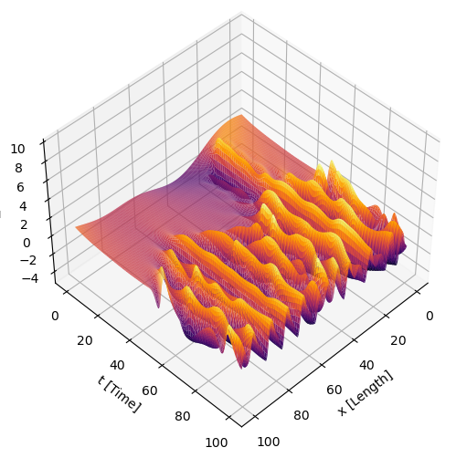
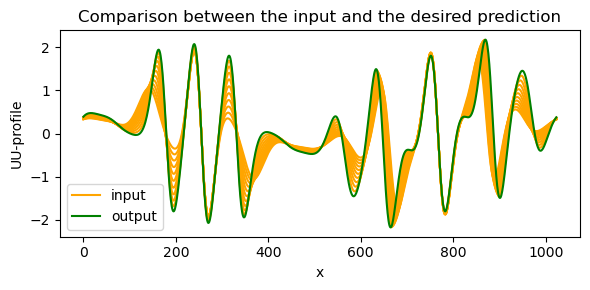
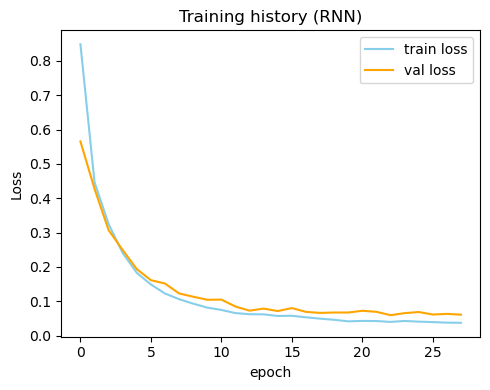
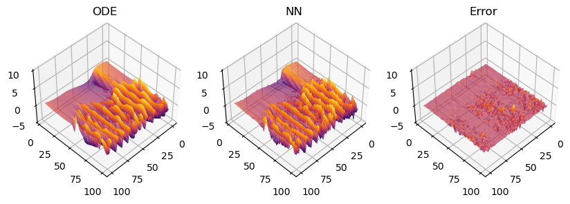
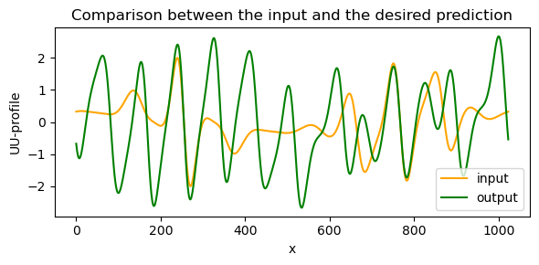
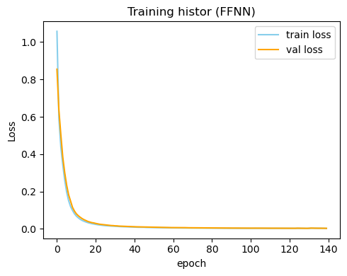
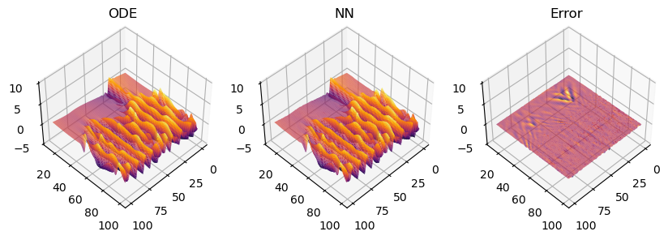
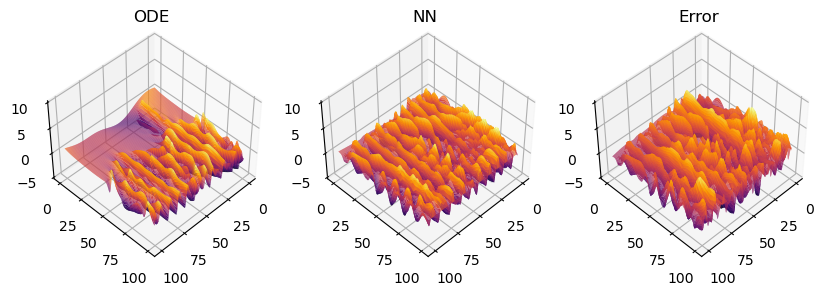

<!DOCTYPE html>


<html lang="en" >

  <head>
    <meta charset="utf-8" />
    <meta name="viewport" content="width=device-width, initial-scale=1.0" /><meta name="generator" content="Docutils 0.18.1: http://docutils.sourceforge.net/" />

    <title>KS System &#8212; sml report</title>
  
  
  
  <script data-cfasync="false">
    document.documentElement.dataset.mode = localStorage.getItem("mode") || "";
    document.documentElement.dataset.theme = localStorage.getItem("theme") || "light";
  </script>
  
  <!-- Loaded before other Sphinx assets -->
  <link href="../_static/styles/theme.css?digest=e353d410970836974a52" rel="stylesheet" />
<link href="../_static/styles/bootstrap.css?digest=e353d410970836974a52" rel="stylesheet" />
<link href="../_static/styles/pydata-sphinx-theme.css?digest=e353d410970836974a52" rel="stylesheet" />

  
  <link href="../_static/vendor/fontawesome/6.1.2/css/all.min.css?digest=e353d410970836974a52" rel="stylesheet" />
  <link rel="preload" as="font" type="font/woff2" crossorigin href="../_static/vendor/fontawesome/6.1.2/webfonts/fa-solid-900.woff2" />
<link rel="preload" as="font" type="font/woff2" crossorigin href="../_static/vendor/fontawesome/6.1.2/webfonts/fa-brands-400.woff2" />
<link rel="preload" as="font" type="font/woff2" crossorigin href="../_static/vendor/fontawesome/6.1.2/webfonts/fa-regular-400.woff2" />

    <link rel="stylesheet" type="text/css" href="../_static/pygments.css" />
    <link rel="stylesheet" href="../_static/styles/sphinx-book-theme.css?digest=14f4ca6b54d191a8c7657f6c759bf11a5fb86285" type="text/css" />
    <link rel="stylesheet" type="text/css" href="../_static/togglebutton.css" />
    <link rel="stylesheet" type="text/css" href="../_static/copybutton.css" />
    <link rel="stylesheet" type="text/css" href="../_static/mystnb.4510f1fc1dee50b3e5859aac5469c37c29e427902b24a333a5f9fcb2f0b3ac41.css" />
    <link rel="stylesheet" type="text/css" href="../_static/sphinx-thebe.css" />
    <link rel="stylesheet" type="text/css" href="../_static/design-style.4045f2051d55cab465a707391d5b2007.min.css" />
  
  <!-- Pre-loaded scripts that we'll load fully later -->
  <link rel="preload" as="script" href="../_static/scripts/bootstrap.js?digest=e353d410970836974a52" />
<link rel="preload" as="script" href="../_static/scripts/pydata-sphinx-theme.js?digest=e353d410970836974a52" />

    <script data-url_root="../" id="documentation_options" src="../_static/documentation_options.js"></script>
    <script src="../_static/jquery.js"></script>
    <script src="../_static/underscore.js"></script>
    <script src="../_static/_sphinx_javascript_frameworks_compat.js"></script>
    <script src="../_static/doctools.js"></script>
    <script src="../_static/clipboard.min.js"></script>
    <script src="../_static/copybutton.js"></script>
    <script src="../_static/scripts/sphinx-book-theme.js?digest=5a5c038af52cf7bc1a1ec88eea08e6366ee68824"></script>
    <script>let toggleHintShow = 'Click to show';</script>
    <script>let toggleHintHide = 'Click to hide';</script>
    <script>let toggleOpenOnPrint = 'true';</script>
    <script src="../_static/togglebutton.js"></script>
    <script>var togglebuttonSelector = '.toggle, .admonition.dropdown';</script>
    <script src="../_static/design-tabs.js"></script>
    <script>const THEBE_JS_URL = "https://unpkg.com/thebe@0.8.2/lib/index.js"
const thebe_selector = ".thebe,.cell"
const thebe_selector_input = "pre"
const thebe_selector_output = ".output, .cell_output"
</script>
    <script async="async" src="../_static/sphinx-thebe.js"></script>
    <script>window.MathJax = {"options": {"processHtmlClass": "tex2jax_process|mathjax_process|math|output_area"}}</script>
    <script defer="defer" src="https://cdn.jsdelivr.net/npm/mathjax@3/es5/tex-mml-chtml.js"></script>
    <script>DOCUMENTATION_OPTIONS.pagename = 'Exercise 6.1/Exercise_6.1_KS_a_b';</script>
    <link rel="index" title="Index" href="../genindex.html" />
    <link rel="search" title="Search" href="../search.html" />
    <link rel="next" title="Reaction Diffusion System" href="Exercise_6.1_RD_a_b_c.html" />
    <link rel="prev" title="Exercise 6.1" href="6.1_toc.html" />
  <meta name="viewport" content="width=device-width, initial-scale=1"/>
  <meta name="docsearch:language" content="en"/>
  </head>
  
  
  <body data-bs-spy="scroll" data-bs-target=".bd-toc-nav" data-offset="180" data-bs-root-margin="0px 0px -60%" data-default-mode="">

  
  
  <a class="skip-link" href="#main-content">Skip to main content</a>
  
  <input type="checkbox"
          class="sidebar-toggle"
          name="__primary"
          id="__primary"/>
  <label class="overlay overlay-primary" for="__primary"></label>
  
  <input type="checkbox"
          class="sidebar-toggle"
          name="__secondary"
          id="__secondary"/>
  <label class="overlay overlay-secondary" for="__secondary"></label>
  
  <div class="search-button__wrapper">
    <div class="search-button__overlay"></div>
    <div class="search-button__search-container">
<form class="bd-search d-flex align-items-center"
      action="../search.html"
      method="get">
  <i class="fa-solid fa-magnifying-glass"></i>
  <input type="search"
         class="form-control"
         name="q"
         id="search-input"
         placeholder="Search this book..."
         aria-label="Search this book..."
         autocomplete="off"
         autocorrect="off"
         autocapitalize="off"
         spellcheck="false"/>
  <span class="search-button__kbd-shortcut"><kbd class="kbd-shortcut__modifier">Ctrl</kbd>+<kbd>K</kbd></span>
</form></div>
  </div>
  
    <nav class="bd-header navbar navbar-expand-lg bd-navbar">
    </nav>
  
  <div class="bd-container">
    <div class="bd-container__inner bd-page-width">
      
      <div class="bd-sidebar-primary bd-sidebar">
        

  
  <div class="sidebar-header-items sidebar-primary__section">
    
    
    
    
  </div>
  
    <div class="sidebar-primary-items__start sidebar-primary__section">
        <div class="sidebar-primary-item">
  

<a class="navbar-brand logo" href="../intro.html">
  
  
  
  
    
    
      
    
    
    
    <script>document.write(``);</script>
  
  
</a></div>
        <div class="sidebar-primary-item"><nav class="bd-links" id="bd-docs-nav" aria-label="Main">
    <div class="bd-toc-item navbar-nav active">
        
        <ul class="nav bd-sidenav bd-sidenav__home-link">
            <li class="toctree-l1">
                <a class="reference internal" href="../intro.html">
                    Welcome to the Scientific Machine Learning Jupyter Book
                </a>
            </li>
        </ul>
        <p aria-level="2" class="caption" role="heading"><span class="caption-text">Exercises</span></p>
<ul class="current nav bd-sidenav">
<li class="toctree-l1"><a class="reference internal" href="../Exercise%20X01.1/ExerciseX01.1_.html">Exercise X01.1</a></li>
<li class="toctree-l1"><a class="reference internal" href="../Exercise%201.7/Exercise_1.7_.html">Exercise 1.7</a></li>
<li class="toctree-l1"><a class="reference internal" href="../Exercise%202.3/Exercise_2.3_.html">Exercise 2.3</a></li>
<li class="toctree-l1 current active has-children"><a class="reference internal" href="6.1_toc.html">Exercise 6.1</a><input checked="" class="toctree-checkbox" id="toctree-checkbox-1" name="toctree-checkbox-1" type="checkbox"/><label class="toctree-toggle" for="toctree-checkbox-1"><i class="fa-solid fa-chevron-down"></i></label><ul class="current">
<li class="toctree-l2 current active"><a class="current reference internal" href="#">KS System</a></li>
<li class="toctree-l2"><a class="reference internal" href="Exercise_6.1_RD_a_b_c.html">Reaction Diffusion System</a></li>
<li class="toctree-l2"><a class="reference internal" href="Exercise6.1_L_d.html">Lorenz System</a></li>
</ul>
</li>
<li class="toctree-l1"><a class="reference internal" href="../Exercise%207.4/Exercise_7.4_.html">Exercise 7.4</a></li>


<li class="toctree-l1"><a class="reference internal" href="../Exercise%20X02.1/Exercise_X02_1.html">Exercise X02.1</a></li>
<li class="toctree-l1"><a class="reference internal" href="../Exercise%20X03.1/Exercise_X03.1_.html">Exercise X03.1</a></li>


<li class="toctree-l1"><a class="reference internal" href="../Exercise%2012.2/Exercise_12.2_.html">Exercise 12.2</a></li>
<li class="toctree-l1"><a class="reference internal" href="../Exercise%2012.3/Exercise_12.3_.html">Exercise 12.3</a></li>
<li class="toctree-l1"><a class="reference internal" href="../Exercise%2014.X01/Exercise_14.X01_.html">Exercise 14.X01</a></li>
<li class="toctree-l1"><a class="reference internal" href="../Exercise%2014.X02/Exercise_14.X02_.html">Exercise 14.X02</a></li>
</ul>

    </div>
</nav></div>
    </div>
  
  
  <div class="sidebar-primary-items__end sidebar-primary__section">
  </div>
  
  <div id="rtd-footer-container"></div>


      </div>
      
      <main id="main-content" class="bd-main">
        
        

<div class="sbt-scroll-pixel-helper"></div>

          <div class="bd-content">
            <div class="bd-article-container">
              
              <div class="bd-header-article">
<div class="header-article-items header-article__inner">
  
    <div class="header-article-items__start">
      
        <div class="header-article-item"><label class="sidebar-toggle primary-toggle btn btn-sm" for="__primary" title="Toggle primary sidebar" data-bs-placement="bottom" data-bs-toggle="tooltip">
  <span class="fa-solid fa-bars"></span>
</label></div>
      
    </div>
  
  
    <div class="header-article-items__end">
      
        <div class="header-article-item">

<div class="article-header-buttons">


<div class="dropdown dropdown-source-buttons">
  <button class="btn dropdown-toggle" type="button" data-bs-toggle="dropdown" aria-expanded="false" aria-label="Source repositories">
    <i class="fab fa-github"></i>
  </button>
  <ul class="dropdown-menu">
      
      
      
      <li><a href="https://github.com/executablebooks/jupyter-book" target="_blank"
   class="btn btn-sm btn-source-repository-button dropdown-item"
   title="Source repository"
   data-bs-placement="left" data-bs-toggle="tooltip"
>
  

<span class="btn__icon-container">
  <i class="fab fa-github"></i>
  </span>
<span class="btn__text-container">Repository</span>
</a>
</li>
      
      
      
      
      <li><a href="https://github.com/executablebooks/jupyter-book/issues/new?title=Issue%20on%20page%20%2FExercise 6.1/Exercise_6.1_KS_a_b.html&body=Your%20issue%20content%20here." target="_blank"
   class="btn btn-sm btn-source-issues-button dropdown-item"
   title="Open an issue"
   data-bs-placement="left" data-bs-toggle="tooltip"
>
  

<span class="btn__icon-container">
  <i class="fas fa-lightbulb"></i>
  </span>
<span class="btn__text-container">Open issue</span>
</a>
</li>
      
  </ul>
</div>


<div class="dropdown dropdown-download-buttons">
  <button class="btn dropdown-toggle" type="button" data-bs-toggle="dropdown" aria-expanded="false" aria-label="Download this page">
    <i class="fas fa-download"></i>
  </button>
  <ul class="dropdown-menu">
      
      
      
      <li><a href="../_sources/Exercise 6.1/Exercise_6.1_KS_a_b.ipynb" target="_blank"
   class="btn btn-sm btn-download-source-button dropdown-item"
   title="Download source file"
   data-bs-placement="left" data-bs-toggle="tooltip"
>
  

<span class="btn__icon-container">
  <i class="fas fa-file"></i>
  </span>
<span class="btn__text-container">.ipynb</span>
</a>
</li>
      
      
      
      
      <li>
<button onclick="window.print()"
  class="btn btn-sm btn-download-pdf-button dropdown-item"
  title="Print to PDF"
  data-bs-placement="left" data-bs-toggle="tooltip"
>
  

<span class="btn__icon-container">
  <i class="fas fa-file-pdf"></i>
  </span>
<span class="btn__text-container">.pdf</span>
</button>
</li>
      
  </ul>
</div>


<button onclick="toggleFullScreen()"
  class="btn btn-sm btn-fullscreen-button"
  title="Fullscreen mode"
  data-bs-placement="bottom" data-bs-toggle="tooltip"
>
  

<span class="btn__icon-container">
  <i class="fas fa-expand"></i>
  </span>

</button>


<script>
document.write(`
  <button class="theme-switch-button btn btn-sm btn-outline-primary navbar-btn rounded-circle" title="light/dark" aria-label="light/dark" data-bs-placement="bottom" data-bs-toggle="tooltip">
    <span class="theme-switch" data-mode="light"><i class="fa-solid fa-sun"></i></span>
    <span class="theme-switch" data-mode="dark"><i class="fa-solid fa-moon"></i></span>
    <span class="theme-switch" data-mode="auto"><i class="fa-solid fa-circle-half-stroke"></i></span>
  </button>
`);
</script>

<script>
document.write(`
  <button class="btn btn-sm navbar-btn search-button search-button__button" title="Search" aria-label="Search" data-bs-placement="bottom" data-bs-toggle="tooltip">
    <i class="fa-solid fa-magnifying-glass"></i>
  </button>
`);
</script>
<label class="sidebar-toggle secondary-toggle btn btn-sm" for="__secondary"title="Toggle secondary sidebar" data-bs-placement="bottom" data-bs-toggle="tooltip">
    <span class="fa-solid fa-list"></span>
</label>
</div></div>
      
    </div>
  
</div>
</div>
              
              

<div id="jb-print-docs-body" class="onlyprint">
    <h1>KS System</h1>
    <!-- Table of contents -->
    <div id="print-main-content">
        <div id="jb-print-toc">
            
            <div>
                <h2> Contents </h2>
            </div>
            <nav aria-label="Page">
                <ul class="visible nav section-nav flex-column">
<li class="toc-h2 nav-item toc-entry"><a class="reference internal nav-link" href="#a-nn-for-the-ks-system">(a) - NN for the KS system</a></li>
<li class="toc-h2 nav-item toc-entry"><a class="reference internal nav-link" href="#dataset">Dataset</a><ul class="nav section-nav flex-column">
<li class="toc-h3 nav-item toc-entry"><a class="reference internal nav-link" href="#case-1">CASE 1</a></li>
<li class="toc-h3 nav-item toc-entry"><a class="reference internal nav-link" href="#case-2">CASE 2</a></li>
</ul>
</li>
<li class="toc-h2 nav-item toc-entry"><a class="reference internal nav-link" href="#b-time-stepping-with-the-nn">(b) - Time stepping with the NN</a></li>
</ul>
            </nav>
        </div>
    </div>
</div>

              
                
<div id="searchbox"></div>
                <article class="bd-article" role="main">
                  
  <section class="tex2jax_ignore mathjax_ignore" id="ks-system">
<h1>KS System<a class="headerlink" href="#ks-system" title="Permalink to this heading">#</a></h1>
<section id="a-nn-for-the-ks-system">
<h2>(a) - NN for the KS system<a class="headerlink" href="#a-nn-for-the-ks-system" title="Permalink to this heading">#</a></h2>
<p>The <strong>Kuramoto–Sivashinsky equation</strong> (or flame equation) is a fourth-order nonlinear partial differential equation. It is named after Yoshiki Kuramoto and Gregory Sivashinsky, who derived the equation in the late 1970s to model the diffusive–thermal instabilities in a laminar flame front. It is known for its <strong>chaotic behavior</strong>.</p>
<p>The 1-D version of the KS equation can be written as:
$<span class="math notranslate nohighlight">\( u_t + u_{xx} + u_{xxxx} + \frac{1}{2}u_x^2 = 0 \)</span>$</p>
<p>Data of the KS system is downloaded and imported from the resource site at https://databookuw.com/</p>
<div class="cell docutils container">
<div class="cell_input docutils container">
<div class="highlight-ipython3 notranslate"><div class="highlight"><pre><span></span><span class="c1"># Import the necessary libraries.</span>
<span class="kn">import</span> <span class="nn">numpy</span> <span class="k">as</span> <span class="nn">np</span>
<span class="kn">import</span> <span class="nn">scipy.io</span>
<span class="kn">import</span> <span class="nn">os</span>
<span class="n">os</span><span class="o">.</span><span class="n">environ</span><span class="p">[</span><span class="s2">&quot;KMP_DUPLICATE_LIB_OK&quot;</span><span class="p">]</span><span class="o">=</span><span class="s2">&quot;TRUE&quot;</span>

<span class="c1"># Import plotting libraries and tools.</span>
<span class="kn">import</span> <span class="nn">matplotlib</span>
<span class="kn">import</span> <span class="nn">matplotlib.pyplot</span> <span class="k">as</span> <span class="nn">plt</span>
<span class="kn">from</span> <span class="nn">matplotlib.animation</span> <span class="kn">import</span> <span class="n">FuncAnimation</span>
</pre></div>
</div>
</div>
</div>
<div class="cell docutils container">
<div class="cell_input docutils container">
<div class="highlight-ipython3 notranslate"><div class="highlight"><pre><span></span><span class="c1"># Import data.</span>
<span class="c1"># get the right path to the data.</span>
<span class="n">data_path</span> <span class="o">=</span> <span class="n">os</span><span class="o">.</span><span class="n">path</span><span class="o">.</span><span class="n">join</span><span class="p">(</span> <span class="n">os</span><span class="o">.</span><span class="n">path</span><span class="o">.</span><span class="n">abspath</span><span class="p">(</span><span class="s2">&quot;&quot;</span><span class="p">)</span> <span class="p">,</span> <span class="s2">&quot;../DATA/kuramoto_sivishinky.mat&quot;</span> <span class="p">)</span>
<span class="c1"># load the data.</span>
<span class="n">data</span> <span class="o">=</span> <span class="n">scipy</span><span class="o">.</span><span class="n">io</span><span class="o">.</span><span class="n">loadmat</span><span class="p">(</span> <span class="n">data_path</span> <span class="p">)</span>
<span class="n">uu</span> <span class="o">=</span> <span class="n">data</span><span class="p">[</span><span class="s2">&quot;uu&quot;</span><span class="p">]</span><span class="o">.</span><span class="n">T</span>
<span class="n">x</span> <span class="o">=</span> <span class="n">data</span><span class="p">[</span><span class="s2">&quot;x&quot;</span><span class="p">]</span><span class="o">.</span><span class="n">squeeze</span><span class="p">()</span>
<span class="n">tt</span> <span class="o">=</span> <span class="n">data</span><span class="p">[</span><span class="s2">&quot;tt&quot;</span><span class="p">]</span><span class="o">.</span><span class="n">squeeze</span><span class="p">()</span>

<span class="c1"># save the important dimensions.</span>
<span class="n">t_len</span> <span class="o">=</span> <span class="nb">len</span><span class="p">(</span><span class="n">tt</span><span class="p">)</span>
<span class="n">x_len</span> <span class="o">=</span> <span class="nb">len</span><span class="p">(</span><span class="n">x</span><span class="p">)</span>
<span class="nb">print</span><span class="p">(</span><span class="s2">&quot;NUMBER OF TIME-STEPS:&quot;</span><span class="p">,</span> <span class="n">t_len</span><span class="p">)</span>
<span class="nb">print</span><span class="p">(</span><span class="s2">&quot;NUMBER OF SPACE-POINTS:&quot;</span><span class="p">,</span> <span class="n">x_len</span><span class="p">)</span>
</pre></div>
</div>
</div>
<div class="cell_output docutils container">
<div class="output stream highlight-myst-ansi notranslate"><div class="highlight"><pre><span></span>NUMBER OF TIME-STEPS: 251
NUMBER OF SPACE-POINTS: 1024
</pre></div>
</div>
</div>
</div>
</section>
<section id="dataset">
<h2>Dataset<a class="headerlink" href="#dataset" title="Permalink to this heading">#</a></h2>
<p>The data can be interpreted as a temporal-sequence of <span class="math notranslate nohighlight">\(251\)</span> vectors (labelled throught <span class="math notranslate nohighlight">\(t_0,...,t_{250}\)</span>), each composed of <span class="math notranslate nohighlight">\(1024\)</span> space points (labelled throught <span class="math notranslate nohighlight">\(x_0,...,x_{1024}\)</span>). This means that, if <span class="math notranslate nohighlight">\(uu\)</span> is a matrix of dimension <span class="math notranslate nohighlight">\((251 \times 1024)\)</span>, given the column <span class="math notranslate nohighlight">\(uu^{(j)}\)</span>, we want to predict column <span class="math notranslate nohighlight">\(uu^{(j+\Delta j)}\)</span>.</p>
<div class="cell docutils container">
<div class="cell_input docutils container">
<div class="highlight-ipython3 notranslate"><div class="highlight"><pre><span></span><span class="c1"># Plot the data.</span>
<span class="n">fig</span> <span class="o">=</span> <span class="n">plt</span><span class="o">.</span><span class="n">figure</span><span class="p">(</span> <span class="n">figsize</span> <span class="o">=</span> <span class="p">(</span> <span class="mi">6</span> <span class="p">,</span> <span class="mi">6</span> <span class="p">)</span> <span class="p">)</span>
<span class="n">ax</span> <span class="o">=</span> <span class="n">fig</span><span class="o">.</span><span class="n">add_subplot</span><span class="p">(</span> <span class="mi">1</span> <span class="p">,</span> <span class="mi">1</span> <span class="p">,</span> <span class="mi">1</span> <span class="p">,</span> <span class="n">projection</span> <span class="o">=</span> <span class="s1">&#39;3d&#39;</span> <span class="p">)</span>
<span class="n">X</span> <span class="p">,</span> <span class="n">T</span> <span class="o">=</span> <span class="n">np</span><span class="o">.</span><span class="n">meshgrid</span><span class="p">(</span> <span class="n">x</span> <span class="p">,</span> <span class="n">tt</span> <span class="p">)</span>
<span class="n">surf</span> <span class="o">=</span> <span class="n">ax</span><span class="o">.</span><span class="n">plot_surface</span><span class="p">(</span> <span class="n">X</span> <span class="p">,</span> <span class="n">T</span> <span class="p">,</span> <span class="n">uu</span> <span class="p">,</span> <span class="n">cmap</span> <span class="o">=</span> <span class="s1">&#39;inferno&#39;</span> <span class="p">,</span> <span class="n">rstride</span> <span class="o">=</span> <span class="mi">3</span><span class="p">,</span> <span class="n">cstride</span> <span class="o">=</span> <span class="mi">3</span><span class="p">,</span> <span class="n">antialiased</span> <span class="o">=</span> <span class="kc">True</span> <span class="p">)</span>
<span class="n">ax</span><span class="o">.</span><span class="n">set_xlabel</span><span class="p">(</span><span class="s1">&#39;x [Length]&#39;</span><span class="p">)</span>
<span class="n">ax</span><span class="o">.</span><span class="n">set_ylabel</span><span class="p">(</span><span class="s1">&#39;t [Time]&#39;</span><span class="p">)</span>
<span class="n">ax</span><span class="o">.</span><span class="n">set_zlabel</span><span class="p">(</span><span class="s1">&#39;uu&#39;</span><span class="p">)</span>
<span class="n">ax</span><span class="o">.</span><span class="n">set_zlim</span><span class="p">(</span> <span class="o">-</span><span class="mi">5</span> <span class="p">,</span> <span class="mi">10</span> <span class="p">)</span>
<span class="n">ax</span><span class="o">.</span><span class="n">view_init</span><span class="p">(</span> <span class="mi">45</span> <span class="p">,</span> <span class="mi">45</span> <span class="p">)</span>
<span class="n">plt</span><span class="o">.</span><span class="n">show</span><span class="p">()</span>
</pre></div>
</div>
</div>
<div class="cell_output docutils container">

</div>
</div>
<p>First, we must prepare the dataset:</p>
<ul class="simple">
<li><p>The input dataset, <span class="math notranslate nohighlight">\(IN\)</span>, will correspond to a matrix of dimension <span class="math notranslate nohighlight">\(((251 - \Delta j) \times 1024)\)</span>, which contains the coulmns from <span class="math notranslate nohighlight">\(uu^{(0)}\)</span> to <span class="math notranslate nohighlight">\(uu^{(250 - \Delta j)}\)</span>.</p></li>
<li><p>The labels (or output), <span class="math notranslate nohighlight">\(OUT\)</span>, will be composed of a matrix with same dimension, but whose columns span from <span class="math notranslate nohighlight">\(uu^{(\Delta j)}\)</span> to <span class="math notranslate nohighlight">\(uu^{(250)}\)</span>.</p></li>
</ul>
<p>We tried to implement two different experiments:</p>
<ul class="simple">
<li><p>CASE 1: The network takes as input <span class="math notranslate nohighlight">\(uu^{(j)},...,uu^{(j+\Delta j -1)}\)</span> and gives back as its output <span class="math notranslate nohighlight">\(uu^{(j+\Delta j)}\)</span>. In this case the data pair is composed of a tuple and a vector ([<span class="math notranslate nohighlight">\(uu^{(j)},...,uu^{(j+\Delta j-1)}\)</span>],<span class="math notranslate nohighlight">\(uu^{(j+\Delta j)}\)</span>).</p></li>
<li><p>CASE 2: The network takes as input <span class="math notranslate nohighlight">\(uu^{(j)}\)</span> and gives back as its output <span class="math notranslate nohighlight">\(uu^{(j+\Delta j)}\)</span>. Each pair of columns (<span class="math notranslate nohighlight">\(uu^{(j)}\)</span>,<span class="math notranslate nohighlight">\(uu^{(j+\Delta j)}\)</span>) is a data-pair.</p></li>
</ul>
<section id="case-1">
<h3>CASE 1<a class="headerlink" href="#case-1" title="Permalink to this heading">#</a></h3>
<p>Create the data pairs.</p>
<div class="cell docutils container">
<div class="cell_input docutils container">
<div class="highlight-ipython3 notranslate"><div class="highlight"><pre><span></span><span class="c1"># Choose a DELTA T (from 0 to 251)</span>
<span class="n">DT</span> <span class="o">=</span> <span class="mi">10</span>

<span class="c1"># divide the dataset between input (past) and output (future).</span>
<span class="n">past</span> <span class="o">=</span> <span class="n">uu</span><span class="p">[</span> <span class="p">:</span> <span class="p">(</span> <span class="n">t_len</span> <span class="o">-</span> <span class="n">DT</span> <span class="p">)</span> <span class="p">,</span> <span class="p">:</span> <span class="p">]</span> 
<span class="n">future</span> <span class="o">=</span> <span class="n">uu</span><span class="p">[</span> <span class="n">DT</span> <span class="p">:</span> <span class="p">(</span><span class="n">t_len</span><span class="p">)</span> <span class="p">,</span> <span class="p">:</span> <span class="p">]</span> 

<span class="c1"># define IN and OUT coherently with their description.</span>
<span class="n">IN</span> <span class="o">=</span> <span class="n">np</span><span class="o">.</span><span class="n">zeros</span><span class="p">((</span> <span class="n">t_len</span> <span class="o">-</span> <span class="n">DT</span> <span class="p">,</span> <span class="n">DT</span> <span class="p">,</span> <span class="n">x_len</span> <span class="p">))</span>
<span class="n">OUT</span> <span class="o">=</span> <span class="n">future</span>

<span class="k">for</span> <span class="n">i</span> <span class="ow">in</span> <span class="nb">range</span><span class="p">(</span> <span class="mi">0</span> <span class="p">,</span> <span class="n">t_len</span> <span class="o">-</span> <span class="n">DT</span> <span class="p">,</span> <span class="mi">1</span> <span class="p">):</span>
    <span class="n">IN</span><span class="p">[</span><span class="n">i</span><span class="p">]</span> <span class="o">=</span> <span class="n">uu</span><span class="p">[</span> <span class="n">i</span> <span class="p">:</span> <span class="n">i</span> <span class="o">+</span> <span class="n">DT</span> <span class="p">,</span> <span class="p">:</span> <span class="p">]</span>
</pre></div>
</div>
</div>
</div>
<p>Sample one data pair randomly from the dataset and plot it.</p>
<div class="cell docutils container">
<div class="cell_input docutils container">
<div class="highlight-ipython3 notranslate"><div class="highlight"><pre><span></span><span class="kn">from</span> <span class="nn">numpy</span> <span class="kn">import</span> <span class="n">random</span>
<span class="n">np</span><span class="o">.</span><span class="n">random</span><span class="o">.</span><span class="n">seed</span><span class="p">(</span><span class="mi">42</span><span class="p">)</span>
<span class="n">k</span> <span class="o">=</span> <span class="n">random</span><span class="o">.</span><span class="n">randint</span><span class="p">(</span> <span class="mi">0</span> <span class="p">,</span> <span class="n">high</span> <span class="o">=</span> <span class="p">(</span> <span class="n">t_len</span> <span class="o">-</span> <span class="mi">1</span> <span class="o">-</span> <span class="n">DT</span> <span class="p">)</span> <span class="p">,</span> <span class="n">dtype</span> <span class="o">=</span> <span class="nb">int</span> <span class="p">)</span>

<span class="n">x_</span> <span class="o">=</span> <span class="n">IN</span><span class="p">[</span><span class="n">k</span><span class="p">]</span>
<span class="n">x_prime</span> <span class="o">=</span> <span class="n">OUT</span><span class="p">[</span><span class="n">k</span><span class="p">]</span>
<span class="n">comparison</span> <span class="o">=</span> <span class="n">OUT</span><span class="p">[</span> <span class="n">k</span> <span class="o">-</span> <span class="n">DT</span> <span class="p">]</span>

<span class="n">fig</span><span class="o">.</span><span class="n">clear</span><span class="p">()</span>
<span class="n">plt</span><span class="o">.</span><span class="n">close</span><span class="p">()</span>

<span class="n">fig</span> <span class="p">,</span> <span class="n">ax</span> <span class="o">=</span> <span class="n">plt</span><span class="o">.</span><span class="n">subplots</span><span class="p">(</span> <span class="mi">1</span> <span class="p">,</span> <span class="n">figsize</span> <span class="o">=</span> <span class="p">(</span> <span class="mi">6</span> <span class="p">,</span> <span class="mi">3</span> <span class="p">)</span> <span class="p">)</span>
<span class="n">ax</span><span class="o">.</span><span class="n">plot</span><span class="p">(</span> <span class="n">x_</span><span class="p">[</span><span class="mi">0</span><span class="p">]</span> <span class="p">,</span> <span class="n">label</span> <span class="o">=</span> <span class="s2">&quot;input&quot;</span><span class="p">,</span> <span class="n">color</span> <span class="o">=</span> <span class="s2">&quot;orange&quot;</span><span class="p">)</span>
<span class="k">for</span> <span class="n">i</span> <span class="ow">in</span> <span class="nb">range</span><span class="p">(</span> <span class="mi">1</span> <span class="p">,</span> <span class="n">DT</span><span class="p">,</span> <span class="mi">1</span> <span class="p">):</span>
    <span class="n">ax</span><span class="o">.</span><span class="n">plot</span><span class="p">(</span><span class="n">x_</span><span class="p">[</span><span class="n">i</span><span class="p">],</span> <span class="n">color</span> <span class="o">=</span> <span class="s2">&quot;orange&quot;</span><span class="p">)</span>
<span class="n">ax</span><span class="o">.</span><span class="n">plot</span><span class="p">(</span> <span class="n">x_prime</span> <span class="p">,</span> <span class="n">label</span> <span class="o">=</span> <span class="s2">&quot;output&quot;</span> <span class="p">,</span> <span class="n">color</span> <span class="o">=</span> <span class="s2">&quot;green&quot;</span><span class="p">)</span>
<span class="n">ax</span><span class="o">.</span><span class="n">set_xlabel</span><span class="p">(</span><span class="s2">&quot;x&quot;</span><span class="p">)</span>
<span class="n">ax</span><span class="o">.</span><span class="n">set_ylabel</span><span class="p">(</span><span class="s2">&quot;UU-profile&quot;</span><span class="p">)</span>
<span class="n">ax</span><span class="o">.</span><span class="n">set_title</span><span class="p">(</span><span class="s1">&#39;Comparison between the input and the desired prediction&#39;</span><span class="p">)</span>

<span class="n">fig</span><span class="o">.</span><span class="n">tight_layout</span><span class="p">()</span>
<span class="n">plt</span><span class="o">.</span><span class="n">legend</span><span class="p">()</span>
<span class="n">plt</span><span class="o">.</span><span class="n">show</span><span class="p">()</span>
</pre></div>
</div>
</div>
<div class="cell_output docutils container">

</div>
</div>
<p>Divide the dataset in <em>training</em>, <em>validation</em> and <em>test set</em>.</p>
<div class="cell docutils container">
<div class="cell_input docutils container">
<div class="highlight-ipython3 notranslate"><div class="highlight"><pre><span></span><span class="c1"># Divide the dataset between trining, validation and test sets.</span>
<span class="n">dataset_len</span> <span class="o">=</span> <span class="nb">len</span><span class="p">(</span><span class="n">IN</span><span class="p">)</span>
<span class="n">train_len</span> <span class="o">=</span> <span class="nb">int</span><span class="p">(</span><span class="n">dataset_len</span>  <span class="o">*</span> <span class="mf">0.8</span><span class="p">)</span>
<span class="n">val_len</span> <span class="o">=</span> <span class="nb">int</span><span class="p">(</span><span class="n">dataset_len</span>  <span class="o">*</span> <span class="mf">0.1</span><span class="p">)</span>
<span class="n">test_len</span> <span class="o">=</span> <span class="nb">int</span><span class="p">(</span><span class="n">dataset_len</span>  <span class="o">*</span> <span class="mf">0.1</span><span class="p">)</span>

<span class="c1"># Random shuffle to select the pairs non-sequentially.</span>
<span class="n">idx</span> <span class="o">=</span> <span class="n">np</span><span class="o">.</span><span class="n">random</span><span class="o">.</span><span class="n">choice</span><span class="p">(</span> <span class="n">IN</span><span class="o">.</span><span class="n">shape</span><span class="p">[</span><span class="mi">0</span><span class="p">]</span> <span class="p">,</span> <span class="n">dataset_len</span>  <span class="p">,</span> <span class="n">replace</span> <span class="o">=</span> <span class="kc">False</span> <span class="p">)</span>
<span class="n">idx_train</span> <span class="o">=</span> <span class="n">idx</span><span class="p">[</span> <span class="mi">0</span> <span class="p">:</span> <span class="n">train_len</span> <span class="p">]</span>
<span class="n">idx_val</span> <span class="o">=</span> <span class="n">idx</span><span class="p">[</span> <span class="n">train_len</span> <span class="p">:</span> <span class="p">(</span> <span class="n">train_len</span> <span class="o">+</span> <span class="n">val_len</span> <span class="p">)</span> <span class="p">]</span>
<span class="n">idx_test</span> <span class="o">=</span> <span class="n">idx</span><span class="p">[</span> <span class="p">(</span> <span class="n">train_len</span> <span class="o">+</span> <span class="n">val_len</span> <span class="p">):</span> <span class="p">]</span>

<span class="c1"># Get the dataset done.</span>
<span class="n">TRAIN_IN</span> <span class="o">=</span> <span class="n">np</span><span class="o">.</span><span class="n">take</span><span class="p">(</span> <span class="n">IN</span> <span class="p">,</span> <span class="n">idx_train</span> <span class="p">,</span> <span class="n">axis</span> <span class="o">=</span> <span class="mi">0</span><span class="p">)</span>
<span class="n">TRAIN_OUT</span> <span class="o">=</span> <span class="n">np</span><span class="o">.</span><span class="n">take</span><span class="p">(</span> <span class="n">OUT</span> <span class="p">,</span> <span class="n">idx_train</span> <span class="p">,</span> <span class="n">axis</span> <span class="o">=</span> <span class="mi">0</span><span class="p">)</span>
<span class="n">VAL_IN</span> <span class="o">=</span> <span class="n">np</span><span class="o">.</span><span class="n">take</span><span class="p">(</span> <span class="n">IN</span> <span class="p">,</span> <span class="n">idx_val</span> <span class="p">,</span> <span class="n">axis</span> <span class="o">=</span> <span class="mi">0</span><span class="p">)</span>
<span class="n">VAL_OUT</span> <span class="o">=</span> <span class="n">np</span><span class="o">.</span><span class="n">take</span><span class="p">(</span> <span class="n">OUT</span> <span class="p">,</span> <span class="n">idx_val</span> <span class="p">,</span> <span class="n">axis</span> <span class="o">=</span> <span class="mi">0</span><span class="p">)</span>
<span class="n">TEST_IN</span> <span class="o">=</span> <span class="n">np</span><span class="o">.</span><span class="n">take</span><span class="p">(</span> <span class="n">IN</span> <span class="p">,</span> <span class="n">idx_test</span> <span class="p">,</span> <span class="n">axis</span> <span class="o">=</span> <span class="mi">0</span><span class="p">)</span>
<span class="n">TEST_OUT</span> <span class="o">=</span> <span class="n">np</span><span class="o">.</span><span class="n">take</span><span class="p">(</span> <span class="n">OUT</span> <span class="p">,</span> <span class="n">idx_test</span> <span class="p">,</span> <span class="n">axis</span> <span class="o">=</span> <span class="mi">0</span><span class="p">)</span>
</pre></div>
</div>
</div>
</div>
<p>For CASE 1 the model is a <strong>simple RNN</strong> implemented in Keras; it takes as input the <span class="math notranslate nohighlight">\(\Delta j\)</span> time-steps before <span class="math notranslate nohighlight">\(j+\Delta j\)</span> and gives as output <span class="math notranslate nohighlight">\(uu^{(j)}\)</span>.</p>
<p>Define the model.</p>
<div class="cell docutils container">
<div class="cell_input docutils container">
<div class="highlight-ipython3 notranslate"><div class="highlight"><pre><span></span><span class="kn">from</span> <span class="nn">keras.models</span> <span class="kn">import</span> <span class="n">Sequential</span>
<span class="kn">from</span> <span class="nn">keras.layers</span> <span class="kn">import</span> <span class="n">SimpleRNN</span><span class="p">,</span> <span class="n">Dense</span>

<span class="c1"># Define the number of timesteps, inputs, outputs, and hidden units</span>
<span class="n">num_timesteps</span> <span class="o">=</span> <span class="n">DT</span>
<span class="n">num_inputs</span> <span class="o">=</span> <span class="n">x_len</span>
<span class="n">num_outputs</span> <span class="o">=</span> <span class="n">x_len</span>
<span class="n">hidden_size</span> <span class="o">=</span> <span class="mi">50</span>

<span class="c1"># Create a sequential model</span>
<span class="n">model</span> <span class="o">=</span> <span class="n">Sequential</span><span class="p">()</span>
<span class="n">model</span><span class="o">.</span><span class="n">add</span><span class="p">(</span> <span class="n">SimpleRNN</span><span class="p">(</span> <span class="n">hidden_size</span> <span class="p">,</span> <span class="n">activation</span><span class="o">=</span><span class="s1">&#39;tanh&#39;</span><span class="p">,</span> <span class="n">input_shape</span><span class="o">=</span><span class="p">(</span> <span class="n">num_timesteps</span> <span class="p">,</span> <span class="n">num_inputs</span> <span class="p">)</span> <span class="p">)</span> <span class="p">)</span>
<span class="n">model</span><span class="o">.</span><span class="n">add</span><span class="p">(</span> <span class="n">Dense</span><span class="p">(</span> <span class="n">num_outputs</span> <span class="p">,</span> <span class="n">activation</span><span class="o">=</span><span class="s1">&#39;linear&#39;</span> <span class="p">)</span> <span class="p">)</span>

<span class="c1"># Print the summary of the model</span>
<span class="n">model</span><span class="o">.</span><span class="n">summary</span><span class="p">()</span>
</pre></div>
</div>
</div>
<div class="cell_output docutils container">
<div class="output stream highlight-myst-ansi notranslate"><div class="highlight"><pre><span></span>Model: &quot;sequential&quot;
</pre></div>
</div>
<div class="output stream highlight-myst-ansi notranslate"><div class="highlight"><pre><span></span>_________________________________________________________________
</pre></div>
</div>
<div class="output stream highlight-myst-ansi notranslate"><div class="highlight"><pre><span></span> Layer (type)                Output Shape              Param #   
</pre></div>
</div>
<div class="output stream highlight-myst-ansi notranslate"><div class="highlight"><pre><span></span>=================================================================
</pre></div>
</div>
<div class="output stream highlight-myst-ansi notranslate"><div class="highlight"><pre><span></span> simple_rnn (SimpleRNN)      (None, 50)                53750     
</pre></div>
</div>
<div class="output stream highlight-myst-ansi notranslate"><div class="highlight"><pre><span></span>                                                                 
</pre></div>
</div>
<div class="output stream highlight-myst-ansi notranslate"><div class="highlight"><pre><span></span> dense (Dense)               (None, 1024)              52224     
</pre></div>
</div>
<div class="output stream highlight-myst-ansi notranslate"><div class="highlight"><pre><span></span>                                                                 
</pre></div>
</div>
<div class="output stream highlight-myst-ansi notranslate"><div class="highlight"><pre><span></span>=================================================================
</pre></div>
</div>
<div class="output stream highlight-myst-ansi notranslate"><div class="highlight"><pre><span></span>Total params: 105,974
</pre></div>
</div>
<div class="output stream highlight-myst-ansi notranslate"><div class="highlight"><pre><span></span>Trainable params: 105,974
</pre></div>
</div>
<div class="output stream highlight-myst-ansi notranslate"><div class="highlight"><pre><span></span>Non-trainable params: 0
</pre></div>
</div>
<div class="output stream highlight-myst-ansi notranslate"><div class="highlight"><pre><span></span>_________________________________________________________________
</pre></div>
</div>
</div>
</div>
<p>Define the <em>optimization algorithm</em>, the <em>Loss function</em>, the <em>learning rate</em> and compile the model.</p>
<div class="cell docutils container">
<div class="cell_input docutils container">
<div class="highlight-ipython3 notranslate"><div class="highlight"><pre><span></span><span class="kn">from</span> <span class="nn">keras.optimizers</span> <span class="kn">import</span> <span class="n">Adam</span>
<span class="kn">from</span> <span class="nn">keras.losses</span> <span class="kn">import</span> <span class="n">MeanSquaredError</span>

<span class="n">OPTIMIZER</span> <span class="o">=</span> <span class="n">Adam</span><span class="p">(</span><span class="n">learning_rate</span> <span class="o">=</span> <span class="mf">0.01</span><span class="p">)</span>
<span class="n">LOSS</span> <span class="o">=</span> <span class="n">MeanSquaredError</span><span class="p">()</span>

<span class="n">model</span><span class="o">.</span><span class="n">compile</span><span class="p">(</span> <span class="n">optimizer</span> <span class="o">=</span> <span class="n">OPTIMIZER</span> <span class="p">,</span> <span class="n">loss</span> <span class="o">=</span> <span class="n">LOSS</span> <span class="p">)</span>
</pre></div>
</div>
</div>
</div>
<p>Train the model.</p>
<div class="cell docutils container">
<div class="cell_input docutils container">
<div class="highlight-ipython3 notranslate"><div class="highlight"><pre><span></span><span class="kn">from</span> <span class="nn">keras.callbacks</span> <span class="kn">import</span> <span class="n">EarlyStopping</span>

<span class="n">callback</span> <span class="o">=</span> <span class="n">EarlyStopping</span><span class="p">(</span> <span class="n">monitor</span><span class="o">=</span><span class="s1">&#39;val_loss&#39;</span> <span class="p">,</span> <span class="n">patience</span> <span class="o">=</span> <span class="mi">5</span> <span class="p">,</span> <span class="n">min_delta</span> <span class="o">=</span> <span class="mf">1e-10</span><span class="p">)</span>

<span class="n">H</span> <span class="o">=</span> <span class="n">model</span><span class="o">.</span><span class="n">fit</span><span class="p">(</span> <span class="n">TRAIN_IN</span> <span class="p">,</span> <span class="n">TRAIN_OUT</span> <span class="p">,</span> 
               <span class="n">validation_data</span> <span class="o">=</span> <span class="p">(</span> <span class="n">VAL_IN</span> <span class="p">,</span> <span class="n">VAL_OUT</span> <span class="p">)</span> <span class="p">,</span>
               <span class="n">validation_freq</span> <span class="o">=</span> <span class="mi">1</span> <span class="p">,</span>
               <span class="n">epochs</span> <span class="o">=</span> <span class="mi">600</span> <span class="p">,</span>
               <span class="n">shuffle</span> <span class="o">=</span> <span class="kc">True</span> <span class="p">,</span>
               <span class="n">callbacks</span><span class="o">=</span><span class="p">[</span><span class="n">callback</span><span class="p">]</span> <span class="p">,</span>
               <span class="n">verbose</span> <span class="o">=</span> <span class="mi">0</span><span class="p">)</span>  
</pre></div>
</div>
</div>
</div>
<p>Plot the training history.</p>
<div class="cell docutils container">
<div class="cell_input docutils container">
<div class="highlight-ipython3 notranslate"><div class="highlight"><pre><span></span><span class="n">fig</span><span class="o">.</span><span class="n">clear</span><span class="p">()</span>
<span class="n">plt</span><span class="o">.</span><span class="n">close</span><span class="p">()</span>

<span class="n">fig</span> <span class="p">,</span> <span class="n">ax</span> <span class="o">=</span> <span class="n">plt</span><span class="o">.</span><span class="n">subplots</span><span class="p">(</span> <span class="mi">1</span> <span class="p">,</span> <span class="n">figsize</span> <span class="o">=</span> <span class="p">(</span> <span class="mi">5</span> <span class="p">,</span> <span class="mi">4</span> <span class="p">)</span> <span class="p">)</span>
<span class="n">ax</span><span class="o">.</span><span class="n">plot</span><span class="p">(</span> <span class="n">H</span><span class="o">.</span><span class="n">history</span><span class="p">[</span><span class="s2">&quot;loss&quot;</span><span class="p">]</span> <span class="p">,</span> <span class="n">label</span> <span class="o">=</span> <span class="s2">&quot;train loss&quot;</span><span class="p">,</span> <span class="n">color</span> <span class="o">=</span> <span class="s2">&quot;skyblue&quot;</span> <span class="p">)</span>
<span class="n">ax</span><span class="o">.</span><span class="n">plot</span><span class="p">(</span> <span class="n">H</span><span class="o">.</span><span class="n">history</span><span class="p">[</span><span class="s2">&quot;val_loss&quot;</span><span class="p">]</span> <span class="p">,</span> <span class="n">label</span> <span class="o">=</span> <span class="s2">&quot;val loss&quot;</span><span class="p">,</span> <span class="n">color</span> <span class="o">=</span> <span class="s2">&quot;orange&quot;</span> <span class="p">)</span>
<span class="n">ax</span><span class="o">.</span><span class="n">set_xlabel</span><span class="p">(</span><span class="s2">&quot;epoch&quot;</span><span class="p">)</span>
<span class="n">ax</span><span class="o">.</span><span class="n">set_ylabel</span><span class="p">(</span><span class="s2">&quot;Loss&quot;</span><span class="p">)</span>
<span class="n">ax</span><span class="o">.</span><span class="n">set_title</span><span class="p">(</span><span class="s1">&#39;Training history (RNN)&#39;</span><span class="p">)</span>

<span class="n">fig</span><span class="o">.</span><span class="n">tight_layout</span><span class="p">()</span>
<span class="n">plt</span><span class="o">.</span><span class="n">legend</span><span class="p">()</span>
<span class="n">plt</span><span class="o">.</span><span class="n">show</span><span class="p">()</span>
</pre></div>
</div>
</div>
<div class="cell_output docutils container">

</div>
</div>
<p>Use the model to make predictions and evaluate them trought the MSE.</p>
<div class="cell docutils container">
<div class="cell_input docutils container">
<div class="highlight-ipython3 notranslate"><div class="highlight"><pre><span></span><span class="n">TEST_PRED</span> <span class="o">=</span> <span class="n">model</span><span class="o">.</span><span class="n">predict</span><span class="p">(</span><span class="n">TEST_IN</span><span class="p">)</span>
<span class="n">TEST_MSE</span> <span class="o">=</span> <span class="n">LOSS</span><span class="p">(</span><span class="n">TEST_PRED</span><span class="p">,</span><span class="n">TEST_OUT</span><span class="p">)</span>
<span class="n">TOT_PRED</span> <span class="o">=</span> <span class="n">model</span><span class="o">.</span><span class="n">predict</span><span class="p">(</span><span class="n">IN</span><span class="p">)</span>
<span class="n">TOT_MSE</span> <span class="o">=</span> <span class="n">LOSS</span><span class="p">(</span><span class="n">TOT_PRED</span><span class="p">,</span><span class="n">OUT</span><span class="p">)</span>

<span class="nb">print</span><span class="p">(</span><span class="s2">&quot;</span><span class="se">\n</span><span class="s2">---&gt;The MSE on the test set is: </span><span class="si">{:.3f}</span><span class="s2">&quot;</span><span class="o">.</span><span class="n">format</span><span class="p">(</span><span class="n">TEST_MSE</span><span class="o">.</span><span class="n">numpy</span><span class="p">()))</span>
<span class="nb">print</span><span class="p">(</span><span class="s2">&quot;---&gt;The MSE on the entire dataset is: </span><span class="si">{:.3f}</span><span class="s2">&quot;</span><span class="o">.</span><span class="n">format</span><span class="p">(</span><span class="n">TOT_MSE</span><span class="o">.</span><span class="n">numpy</span><span class="p">())</span><span class="o">+</span><span class="s2">&quot;</span><span class="se">\n</span><span class="s2">&quot;</span><span class="p">)</span>
</pre></div>
</div>
</div>
<div class="cell_output docutils container">
<div class="output stream highlight-myst-ansi notranslate"><div class="highlight"><pre><span></span>1/1 [==============================] - ETA: 0s
</pre></div>
</div>
<div class="output stream highlight-myst-ansi notranslate"><div class="highlight"><pre><span></span>
1/1 [==============================] - 0s 317ms/step
</pre></div>
</div>
<div class="output stream highlight-myst-ansi notranslate"><div class="highlight"><pre><span></span>1/8 [==&gt;...........................] - ETA: 0s
</pre></div>
</div>
<div class="output stream highlight-myst-ansi notranslate"><div class="highlight"><pre><span></span>
8/8 [==============================] - ETA: 0s
</pre></div>
</div>
<div class="output stream highlight-myst-ansi notranslate"><div class="highlight"><pre><span></span>
8/8 [==============================] - 0s 9ms/step
</pre></div>
</div>
<div class="output stream highlight-myst-ansi notranslate"><div class="highlight"><pre><span></span>---&gt;The MSE on the test set is: 0.058
---&gt;The MSE on the entire dataset is: 0.040
</pre></div>
</div>
</div>
</div>
<p>Compare the real <span class="math notranslate nohighlight">\(uu\)</span> profiles with the predicted <span class="math notranslate nohighlight">\(uu\)</span> profiles in a movie.</p>
<div class="cell docutils container">
<div class="cell_input docutils container">
<div class="highlight-ipython3 notranslate"><div class="highlight"><pre><span></span><span class="n">fig</span><span class="o">.</span><span class="n">clear</span><span class="p">()</span>
<span class="n">plt</span><span class="o">.</span><span class="n">close</span><span class="p">()</span>
 
<span class="n">fig</span><span class="p">,</span> <span class="n">ax</span> <span class="o">=</span> <span class="n">plt</span><span class="o">.</span><span class="n">subplots</span><span class="p">(</span><span class="mi">1</span><span class="p">,</span> <span class="mi">1</span><span class="p">)</span>
<span class="n">fig</span><span class="o">.</span><span class="n">set_size_inches</span><span class="p">(</span><span class="mi">6</span><span class="p">,</span><span class="mi">3</span><span class="p">)</span>
 
<span class="k">def</span> <span class="nf">animate</span><span class="p">(</span><span class="n">i</span><span class="p">):</span>
    <span class="n">ax</span><span class="o">.</span><span class="n">clear</span><span class="p">()</span>
    <span class="n">ax</span><span class="o">.</span><span class="n">plot</span><span class="p">(</span> <span class="n">x</span><span class="p">,</span> <span class="n">TOT_PRED</span><span class="p">[</span><span class="n">i</span><span class="p">],</span> <span class="n">label</span> <span class="o">=</span> <span class="s2">&quot;prediction&quot;</span><span class="p">,</span> <span class="n">color</span> <span class="o">=</span> <span class="s2">&quot;blue&quot;</span> <span class="p">)</span>
    <span class="n">ax</span><span class="o">.</span><span class="n">plot</span><span class="p">(</span> <span class="n">x</span><span class="p">,</span> <span class="n">OUT</span><span class="p">[</span><span class="n">i</span><span class="p">],</span> <span class="n">label</span> <span class="o">=</span> <span class="s2">&quot;real data&quot;</span><span class="p">,</span> <span class="n">color</span> <span class="o">=</span> <span class="s2">&quot;red&quot;</span> <span class="p">)</span>
    <span class="n">ax</span><span class="o">.</span><span class="n">set_title</span><span class="p">(</span><span class="s2">&quot;RNN vs ODE trajectories&quot;</span><span class="p">)</span>
    <span class="n">ax</span><span class="o">.</span><span class="n">set_xlabel</span><span class="p">(</span><span class="s2">&quot;x&quot;</span><span class="p">)</span>
    <span class="n">ax</span><span class="o">.</span><span class="n">set_ylabel</span><span class="p">(</span><span class="s2">&quot;uu&quot;</span><span class="p">)</span>
    <span class="n">ax</span><span class="o">.</span><span class="n">set_xlim</span><span class="p">([</span><span class="n">x</span><span class="o">.</span><span class="n">min</span><span class="p">(),</span> <span class="n">x</span><span class="o">.</span><span class="n">max</span><span class="p">()])</span>
    <span class="n">ax</span><span class="o">.</span><span class="n">set_ylim</span><span class="p">([</span><span class="o">-</span><span class="mi">4</span><span class="p">,</span><span class="mi">4</span><span class="p">])</span>
    <span class="n">ax</span><span class="o">.</span><span class="n">legend</span><span class="p">(</span><span class="n">loc</span><span class="o">=</span><span class="s2">&quot;upper right&quot;</span><span class="p">)</span>
<span class="n">plt</span><span class="o">.</span><span class="n">close</span><span class="p">()</span>

<span class="n">tot_frames</span> <span class="o">=</span> <span class="n">TOT_PRED</span><span class="o">.</span><span class="n">shape</span><span class="p">[</span><span class="mi">0</span><span class="p">]</span>

<span class="n">ani</span> <span class="o">=</span> <span class="n">FuncAnimation</span><span class="p">(</span> <span class="n">fig</span><span class="p">,</span> <span class="n">animate</span><span class="p">,</span> <span class="n">frames</span><span class="o">=</span><span class="n">tot_frames</span><span class="p">,</span> <span class="n">interval</span><span class="o">=</span><span class="n">tot_frames</span><span class="p">)</span><span class="c1">#repeat=False</span>

<span class="n">video_name</span> <span class="o">=</span> <span class="s2">&quot;RNN_performance_KS.mp4&quot;</span>
<span class="n">ani</span><span class="o">.</span><span class="n">save</span><span class="p">(</span><span class="n">video_name</span><span class="p">,</span> <span class="n">fps</span><span class="o">=</span><span class="mi">10</span><span class="p">,</span>  <span class="n">extra_args</span><span class="o">=</span><span class="p">[</span><span class="s1">&#39;-vcodec&#39;</span><span class="p">,</span> <span class="s1">&#39;libx264&#39;</span><span class="p">])</span>
</pre></div>
</div>
</div>
</div>
<div class="cell docutils container">
<div class="cell_input docutils container">
<div class="highlight-ipython3 notranslate"><div class="highlight"><pre><span></span><span class="o">%%HTML</span>
<span class="p">&lt;</span><span class="nt">iframe</span> <span class="na">width</span><span class="o">=</span><span class="s">&quot;560&quot;</span> <span class="na">height</span><span class="o">=</span><span class="s">&quot;315&quot;</span> <span class="na">src</span><span class="o">=</span><span class="s">&quot;https://www.youtube.com/embed/7jgMM2sd9lU&quot;</span> <span class="na">title</span><span class="o">=</span><span class="s">&quot;YouTube video player&quot;</span> <span class="na">frameborder</span><span class="o">=</span><span class="s">&quot;0&quot;</span> 
<span class="na">allow</span><span class="o">=</span><span class="s">&quot;accelerometer; autoplay; clipboard-write; encrypted-media; gyroscope; picture-in-picture; web-share&quot;</span> <span class="na">allowfullscreen</span><span class="p">&gt;&lt;/</span><span class="nt">iframe</span><span class="p">&gt;</span>
</pre></div>
</div>
</div>
<div class="cell_output docutils container">
<div class="output text_html"><iframe width="560" height="315" src="https://www.youtube.com/embed/7jgMM2sd9lU" title="YouTube video player" frameborder="0" 
allow="accelerometer; autoplay; clipboard-write; encrypted-media; gyroscope; picture-in-picture; web-share" allowfullscreen></iframe>
</div></div>
</div>
<p>Link to the video: <a class="reference external" href="https://youtu.be/7jgMM2sd9lU">Recurrent Neural Network predictions of the Kuramoto-Sivashinsky equation</a></p>
<p>Plot the prediction of the entire dataset.</p>
<div class="cell docutils container">
<div class="cell_input docutils container">
<div class="highlight-ipython3 notranslate"><div class="highlight"><pre><span></span><span class="n">fig</span><span class="o">.</span><span class="n">clear</span><span class="p">()</span>
<span class="n">plt</span><span class="o">.</span><span class="n">close</span><span class="p">()</span>

<span class="n">err</span> <span class="o">=</span> <span class="n">TOT_PRED</span> <span class="o">-</span> <span class="n">uu</span><span class="p">[</span><span class="n">DT</span><span class="p">:]</span>

<span class="c1"># Plot the comparison ammong the NN and ODE trajectories.</span>
<span class="n">X</span> <span class="p">,</span> <span class="n">T</span> <span class="o">=</span> <span class="n">np</span><span class="o">.</span><span class="n">meshgrid</span><span class="p">(</span> <span class="n">x</span> <span class="p">,</span> <span class="n">tt</span> <span class="p">)</span>
<span class="n">fig</span><span class="p">,</span> <span class="n">axes</span> <span class="o">=</span> <span class="n">plt</span><span class="o">.</span><span class="n">subplots</span><span class="p">(</span><span class="mi">1</span><span class="p">,</span> <span class="mi">3</span><span class="p">,</span> <span class="n">figsize</span><span class="o">=</span><span class="p">(</span> <span class="mi">10</span> <span class="p">,</span> <span class="mi">3</span> <span class="p">)</span> <span class="p">,</span> <span class="n">subplot_kw</span> <span class="o">=</span> <span class="p">{</span> <span class="s2">&quot;projection&quot;</span> <span class="p">:</span> <span class="s2">&quot;3d&quot;</span> <span class="p">}</span> <span class="p">)</span>
<span class="k">for</span> <span class="n">zz</span><span class="p">,</span> <span class="n">label</span><span class="p">,</span> <span class="n">ax</span> <span class="ow">in</span> <span class="nb">zip</span><span class="p">(</span> <span class="p">[</span> <span class="n">uu</span><span class="p">[</span><span class="n">DT</span><span class="p">:]</span> <span class="p">,</span> <span class="n">TOT_PRED</span><span class="p">,</span> <span class="n">err</span><span class="p">],</span> <span class="p">[</span><span class="s1">&#39;ODE&#39;</span><span class="p">,</span> <span class="s1">&#39;NN&#39;</span><span class="p">,</span> <span class="s1">&#39;Error&#39;</span><span class="p">],</span> <span class="n">axes</span><span class="p">):</span>
    <span class="n">surf</span> <span class="o">=</span> <span class="n">ax</span><span class="o">.</span><span class="n">plot_surface</span><span class="p">(</span> <span class="n">X</span><span class="p">[</span><span class="n">DT</span><span class="p">:]</span> <span class="p">,</span> <span class="n">T</span><span class="p">[</span><span class="n">DT</span><span class="p">:]</span> <span class="p">,</span> <span class="n">zz</span> <span class="p">,</span> <span class="n">cmap</span> <span class="o">=</span> <span class="s1">&#39;inferno&#39;</span> <span class="p">,</span> <span class="n">rstride</span> <span class="o">=</span> <span class="mi">3</span> <span class="p">,</span> <span class="n">cstride</span> <span class="o">=</span> <span class="mi">3</span> <span class="p">,</span> <span class="n">antialiased</span> <span class="o">=</span> <span class="kc">True</span> <span class="p">)</span>
    <span class="n">ax</span><span class="o">.</span><span class="n">set_zlim</span><span class="p">(</span> <span class="o">-</span><span class="mi">5</span> <span class="p">,</span> <span class="mi">10</span> <span class="p">)</span>
    <span class="n">ax</span><span class="o">.</span><span class="n">set_title</span><span class="p">(</span> <span class="n">label</span> <span class="p">)</span>
    <span class="n">ax</span><span class="o">.</span><span class="n">view_init</span><span class="p">(</span> <span class="mi">45</span> <span class="p">,</span> <span class="mi">45</span> <span class="p">)</span>
<span class="n">plt</span><span class="o">.</span><span class="n">show</span><span class="p">()</span>
</pre></div>
</div>
</div>
<div class="cell_output docutils container">

</div>
</div>
</section>
<section id="case-2">
<h3>CASE 2<a class="headerlink" href="#case-2" title="Permalink to this heading">#</a></h3>
<p>Create the data pairs.</p>
<div class="cell docutils container">
<div class="cell_input docutils container">
<div class="highlight-ipython3 notranslate"><div class="highlight"><pre><span></span><span class="c1"># Choose a DELTA T (from 0 to 251)</span>
<span class="n">DT_</span> <span class="o">=</span> <span class="mi">30</span>

<span class="c1"># Create the input and output pairs.</span>
<span class="n">IN_</span> <span class="o">=</span> <span class="n">uu</span><span class="p">[</span> <span class="p">:(</span> <span class="n">t_len</span> <span class="o">-</span> <span class="n">DT_</span> <span class="p">)</span> <span class="p">,</span> <span class="p">:</span> <span class="p">]</span> 
<span class="n">OUT_</span> <span class="o">=</span> <span class="n">uu</span><span class="p">[</span> <span class="n">DT_</span> <span class="p">:</span> <span class="p">(</span><span class="n">t_len</span><span class="p">)</span> <span class="p">,</span> <span class="p">:</span> <span class="p">]</span> 
</pre></div>
</div>
</div>
</div>
<p>Plot the data pairs.</p>
<div class="cell docutils container">
<div class="cell_input docutils container">
<div class="highlight-ipython3 notranslate"><div class="highlight"><pre><span></span><span class="n">x_</span> <span class="o">=</span> <span class="n">IN_</span><span class="p">[</span><span class="mi">100</span><span class="p">]</span>
<span class="n">x_prime</span> <span class="o">=</span> <span class="n">OUT_</span><span class="p">[</span><span class="mi">100</span><span class="p">]</span>
<span class="n">comparison</span> <span class="o">=</span> <span class="n">OUT_</span><span class="p">[</span> <span class="mi">100</span> <span class="o">-</span> <span class="n">DT_</span> <span class="p">]</span>

<span class="n">fig</span><span class="o">.</span><span class="n">clear</span><span class="p">()</span>
<span class="n">plt</span><span class="o">.</span><span class="n">close</span><span class="p">()</span>

<span class="n">fig</span> <span class="p">,</span> <span class="n">ax</span> <span class="o">=</span> <span class="n">plt</span><span class="o">.</span><span class="n">subplots</span><span class="p">(</span> <span class="mi">1</span> <span class="p">,</span> <span class="n">figsize</span> <span class="o">=</span> <span class="p">(</span> <span class="mi">6</span> <span class="p">,</span> <span class="mi">3</span> <span class="p">)</span> <span class="p">)</span>
<span class="n">ax</span><span class="o">.</span><span class="n">plot</span><span class="p">(</span> <span class="n">x_</span> <span class="p">,</span> <span class="n">label</span> <span class="o">=</span> <span class="s2">&quot;input&quot;</span><span class="p">,</span> <span class="n">color</span> <span class="o">=</span> <span class="s2">&quot;orange&quot;</span> <span class="p">)</span>
<span class="n">ax</span><span class="o">.</span><span class="n">plot</span><span class="p">(</span> <span class="n">x_prime</span> <span class="p">,</span> <span class="n">label</span> <span class="o">=</span> <span class="s2">&quot;output&quot;</span> <span class="p">,</span> <span class="n">color</span> <span class="o">=</span> <span class="s2">&quot;green&quot;</span> <span class="p">)</span>
<span class="n">ax</span><span class="o">.</span><span class="n">set_xlabel</span><span class="p">(</span><span class="s2">&quot;x&quot;</span><span class="p">)</span>
<span class="n">ax</span><span class="o">.</span><span class="n">set_ylabel</span><span class="p">(</span><span class="s2">&quot;UU-profile&quot;</span><span class="p">)</span>
<span class="n">ax</span><span class="o">.</span><span class="n">set_title</span><span class="p">(</span><span class="s1">&#39;Comparison between the input and the desired prediction&#39;</span><span class="p">)</span>

<span class="n">fig</span><span class="o">.</span><span class="n">tight_layout</span><span class="p">()</span>
<span class="n">plt</span><span class="o">.</span><span class="n">legend</span><span class="p">()</span>
<span class="n">plt</span><span class="o">.</span><span class="n">show</span><span class="p">()</span>
</pre></div>
</div>
</div>
<div class="cell_output docutils container">

</div>
</div>
<p>Divide the data in training, validation and test set.</p>
<div class="cell docutils container">
<div class="cell_input docutils container">
<div class="highlight-ipython3 notranslate"><div class="highlight"><pre><span></span><span class="c1"># Divide the dataset between trining, validation and test sets.</span>
<span class="n">dataset_len_</span> <span class="o">=</span> <span class="nb">len</span><span class="p">(</span><span class="n">IN_</span><span class="p">)</span>
<span class="n">train_len_</span> <span class="o">=</span> <span class="nb">int</span><span class="p">(</span><span class="n">dataset_len_</span>  <span class="o">*</span> <span class="mf">0.8</span><span class="p">)</span>
<span class="n">val_len_</span> <span class="o">=</span> <span class="nb">int</span><span class="p">(</span><span class="n">dataset_len_</span>  <span class="o">*</span> <span class="mf">0.1</span><span class="p">)</span>
<span class="n">test_len_</span> <span class="o">=</span> <span class="nb">int</span><span class="p">(</span><span class="n">dataset_len_</span>  <span class="o">*</span> <span class="mf">0.1</span><span class="p">)</span>

<span class="c1"># Random shuffle to select the pairs non-sequentially.</span>
<span class="n">idx_</span> <span class="o">=</span> <span class="n">np</span><span class="o">.</span><span class="n">random</span><span class="o">.</span><span class="n">choice</span><span class="p">(</span> <span class="n">IN_</span><span class="o">.</span><span class="n">shape</span><span class="p">[</span><span class="mi">0</span><span class="p">]</span> <span class="p">,</span> <span class="n">dataset_len_</span>  <span class="p">,</span> <span class="n">replace</span> <span class="o">=</span> <span class="kc">False</span> <span class="p">)</span>
<span class="n">idx_train_</span> <span class="o">=</span> <span class="n">idx_</span><span class="p">[</span> <span class="mi">0</span> <span class="p">:</span> <span class="n">train_len_</span> <span class="p">]</span>
<span class="n">idx_val_</span> <span class="o">=</span> <span class="n">idx_</span><span class="p">[</span> <span class="n">train_len_</span> <span class="p">:</span> <span class="p">(</span> <span class="n">train_len_</span> <span class="o">+</span> <span class="n">val_len_</span> <span class="p">)</span> <span class="p">]</span>
<span class="n">idx_test_</span> <span class="o">=</span> <span class="n">idx_</span><span class="p">[</span> <span class="p">(</span> <span class="n">train_len_</span> <span class="o">+</span> <span class="n">val_len_</span> <span class="p">):</span> <span class="p">]</span>

<span class="c1"># Get the dataset done.</span>
<span class="n">TRAIN_IN_</span> <span class="o">=</span> <span class="n">np</span><span class="o">.</span><span class="n">take</span><span class="p">(</span> <span class="n">IN_</span> <span class="p">,</span> <span class="n">idx_train_</span> <span class="p">,</span> <span class="n">axis</span> <span class="o">=</span> <span class="mi">0</span><span class="p">)</span>
<span class="n">TRAIN_OUT_</span> <span class="o">=</span> <span class="n">np</span><span class="o">.</span><span class="n">take</span><span class="p">(</span> <span class="n">OUT_</span> <span class="p">,</span> <span class="n">idx_train_</span> <span class="p">,</span> <span class="n">axis</span> <span class="o">=</span> <span class="mi">0</span><span class="p">)</span>
<span class="n">VAL_IN_</span> <span class="o">=</span> <span class="n">np</span><span class="o">.</span><span class="n">take</span><span class="p">(</span> <span class="n">IN_</span> <span class="p">,</span> <span class="n">idx_val_</span> <span class="p">,</span> <span class="n">axis</span> <span class="o">=</span> <span class="mi">0</span><span class="p">)</span>
<span class="n">VAL_OUT_</span> <span class="o">=</span> <span class="n">np</span><span class="o">.</span><span class="n">take</span><span class="p">(</span> <span class="n">OUT_</span> <span class="p">,</span> <span class="n">idx_val_</span> <span class="p">,</span> <span class="n">axis</span> <span class="o">=</span> <span class="mi">0</span><span class="p">)</span>
<span class="n">TEST_IN_</span> <span class="o">=</span> <span class="n">np</span><span class="o">.</span><span class="n">take</span><span class="p">(</span> <span class="n">IN_</span> <span class="p">,</span> <span class="n">idx_test_</span> <span class="p">,</span> <span class="n">axis</span> <span class="o">=</span> <span class="mi">0</span><span class="p">)</span>
<span class="n">TEST_OUT_</span> <span class="o">=</span> <span class="n">np</span><span class="o">.</span><span class="n">take</span><span class="p">(</span> <span class="n">OUT_</span> <span class="p">,</span> <span class="n">idx_test_</span> <span class="p">,</span> <span class="n">axis</span> <span class="o">=</span> <span class="mi">0</span><span class="p">)</span>
</pre></div>
</div>
</div>
</div>
<p>For CASE 2 the model is a FFNN implemented in Keras; it takes as input <span class="math notranslate nohighlight">\(uu^{(j)}\)</span> and gives as output <span class="math notranslate nohighlight">\(uu^{(j+\Delta j)}\)</span>.</p>
<p>Define the model.</p>
<div class="cell docutils container">
<div class="cell_input docutils container">
<div class="highlight-ipython3 notranslate"><div class="highlight"><pre><span></span><span class="kn">from</span> <span class="nn">keras.models</span> <span class="kn">import</span> <span class="n">Sequential</span>
<span class="kn">from</span> <span class="nn">keras.layers</span> <span class="kn">import</span> <span class="n">SimpleRNN</span><span class="p">,</span> <span class="n">Dense</span><span class="p">,</span> <span class="n">LSTM</span>

<span class="n">num_inputs_</span> <span class="o">=</span> <span class="n">x_len</span>
<span class="n">num_outputs_</span> <span class="o">=</span> <span class="n">x_len</span>

<span class="c1"># Create a sequential model</span>
<span class="n">model_</span> <span class="o">=</span> <span class="n">Sequential</span><span class="p">()</span>

<span class="n">model_</span><span class="o">.</span><span class="n">add</span><span class="p">(</span> <span class="n">Dense</span><span class="p">(</span> <span class="mi">512</span> <span class="p">,</span> <span class="n">activation</span> <span class="o">=</span> <span class="s1">&#39;tanh&#39;</span><span class="p">,</span> <span class="n">input_shape</span> <span class="o">=</span> <span class="p">(</span> <span class="n">num_inputs_</span> <span class="p">,</span> <span class="p">)</span> <span class="p">)</span> <span class="p">)</span>
<span class="n">model_</span><span class="o">.</span><span class="n">add</span><span class="p">(</span> <span class="n">Dense</span><span class="p">(</span> <span class="n">num_outputs_</span> <span class="p">,</span> <span class="n">activation</span> <span class="o">=</span> <span class="s1">&#39;linear&#39;</span> <span class="p">)</span> <span class="p">)</span>

<span class="c1"># Print the summary of the model</span>
<span class="n">model_</span><span class="o">.</span><span class="n">summary</span><span class="p">()</span>
</pre></div>
</div>
</div>
<div class="cell_output docutils container">
<div class="output stream highlight-myst-ansi notranslate"><div class="highlight"><pre><span></span>Model: &quot;sequential_1&quot;
_________________________________________________________________
 Layer (type)                Output Shape              Param #   
=================================================================
 dense_1 (Dense)             (None, 512)               524800    
                                                                 
 dense_2 (Dense)             (None, 1024)              525312    
                                                                 
=================================================================
Total params: 1,050,112
Trainable params: 1,050,112
Non-trainable params: 0
_________________________________________________________________
</pre></div>
</div>
</div>
</div>
<p>Define the optimization algorithms, the loss, the learning rate and compile the model.</p>
<div class="cell docutils container">
<div class="cell_input docutils container">
<div class="highlight-ipython3 notranslate"><div class="highlight"><pre><span></span><span class="kn">from</span> <span class="nn">keras.optimizers</span> <span class="kn">import</span> <span class="n">Adam</span>
<span class="kn">from</span> <span class="nn">keras.losses</span> <span class="kn">import</span> <span class="n">MeanSquaredError</span>
<span class="kn">from</span> <span class="nn">keras.callbacks</span> <span class="kn">import</span> <span class="n">EarlyStopping</span>

<span class="n">OPTIMIZER</span> <span class="o">=</span> <span class="n">Adam</span><span class="p">(</span><span class="n">learning_rate</span> <span class="o">=</span> <span class="mf">0.0005</span><span class="p">)</span>
<span class="n">LOSS</span> <span class="o">=</span> <span class="n">MeanSquaredError</span><span class="p">()</span>

<span class="n">model_</span><span class="o">.</span><span class="n">compile</span><span class="p">(</span> <span class="n">optimizer</span> <span class="o">=</span> <span class="n">OPTIMIZER</span> <span class="p">,</span> <span class="n">loss</span> <span class="o">=</span> <span class="n">LOSS</span> <span class="p">)</span>
</pre></div>
</div>
</div>
</div>
<p>Train the model.</p>
<div class="cell docutils container">
<div class="cell_input docutils container">
<div class="highlight-ipython3 notranslate"><div class="highlight"><pre><span></span><span class="n">callback_</span> <span class="o">=</span> <span class="n">EarlyStopping</span><span class="p">(</span> <span class="n">monitor</span> <span class="o">=</span> <span class="s1">&#39;val_loss&#39;</span> <span class="p">,</span> <span class="n">patience</span> <span class="o">=</span> <span class="mi">10</span><span class="p">,</span> <span class="n">min_delta</span> <span class="o">=</span> <span class="mf">1e-10</span> <span class="p">)</span>

<span class="n">H_</span> <span class="o">=</span> <span class="n">model_</span><span class="o">.</span><span class="n">fit</span><span class="p">(</span> <span class="n">TRAIN_IN_</span> <span class="p">,</span> <span class="n">TRAIN_OUT_</span> <span class="p">,</span> 
               <span class="n">validation_data</span> <span class="o">=</span> <span class="p">(</span> <span class="n">VAL_IN_</span> <span class="p">,</span> <span class="n">VAL_OUT_</span> <span class="p">)</span> <span class="p">,</span>
               <span class="n">validation_freq</span> <span class="o">=</span> <span class="mi">1</span> <span class="p">,</span>
               <span class="n">epochs</span> <span class="o">=</span> <span class="mi">1000</span> <span class="p">,</span>
               <span class="n">shuffle</span> <span class="o">=</span> <span class="kc">True</span> <span class="p">,</span>
               <span class="n">callbacks</span><span class="o">=</span><span class="p">[</span><span class="n">callback_</span><span class="p">]</span> <span class="p">,</span>
               <span class="n">verbose</span> <span class="o">=</span> <span class="mi">0</span><span class="p">)</span> 
</pre></div>
</div>
</div>
</div>
<p>Plot the training history.</p>
<div class="cell docutils container">
<div class="cell_input docutils container">
<div class="highlight-ipython3 notranslate"><div class="highlight"><pre><span></span><span class="n">fig</span><span class="o">.</span><span class="n">clear</span><span class="p">()</span>
<span class="n">plt</span><span class="o">.</span><span class="n">close</span><span class="p">()</span>

<span class="n">fig</span> <span class="p">,</span> <span class="n">ax</span> <span class="o">=</span> <span class="n">plt</span><span class="o">.</span><span class="n">subplots</span><span class="p">(</span> <span class="mi">1</span> <span class="p">,</span> <span class="n">figsize</span> <span class="o">=</span> <span class="p">(</span> <span class="mi">5</span> <span class="p">,</span> <span class="mi">4</span> <span class="p">)</span> <span class="p">)</span>
<span class="n">ax</span><span class="o">.</span><span class="n">plot</span><span class="p">(</span> <span class="n">H_</span><span class="o">.</span><span class="n">history</span><span class="p">[</span><span class="s2">&quot;loss&quot;</span><span class="p">]</span> <span class="p">,</span> <span class="n">label</span> <span class="o">=</span> <span class="s2">&quot;train loss&quot;</span><span class="p">,</span> <span class="n">color</span> <span class="o">=</span> <span class="s2">&quot;skyblue&quot;</span> <span class="p">)</span>
<span class="n">ax</span><span class="o">.</span><span class="n">plot</span><span class="p">(</span> <span class="n">H_</span><span class="o">.</span><span class="n">history</span><span class="p">[</span><span class="s2">&quot;val_loss&quot;</span><span class="p">]</span> <span class="p">,</span> <span class="n">label</span> <span class="o">=</span> <span class="s2">&quot;val loss&quot;</span><span class="p">,</span> <span class="n">color</span> <span class="o">=</span> <span class="s2">&quot;orange&quot;</span> <span class="p">)</span>
<span class="n">ax</span><span class="o">.</span><span class="n">set_xlabel</span><span class="p">(</span><span class="s2">&quot;epoch&quot;</span><span class="p">)</span>
<span class="n">ax</span><span class="o">.</span><span class="n">set_ylabel</span><span class="p">(</span><span class="s2">&quot;Loss&quot;</span><span class="p">)</span>
<span class="n">ax</span><span class="o">.</span><span class="n">set_title</span><span class="p">(</span><span class="s1">&#39;Training histor (FFNN)&#39;</span><span class="p">)</span>

<span class="n">fig</span><span class="o">.</span><span class="n">tight_layout</span><span class="p">()</span>
<span class="n">plt</span><span class="o">.</span><span class="n">legend</span><span class="p">()</span>
<span class="n">plt</span><span class="o">.</span><span class="n">show</span><span class="p">()</span>
</pre></div>
</div>
</div>
<div class="cell_output docutils container">

</div>
</div>
<p>Use the model to make predictions and the MSE to evaluate them.</p>
<div class="cell docutils container">
<div class="cell_input docutils container">
<div class="highlight-ipython3 notranslate"><div class="highlight"><pre><span></span><span class="n">TEST_PRED_</span> <span class="o">=</span> <span class="n">model_</span><span class="o">.</span><span class="n">predict</span><span class="p">(</span><span class="n">TEST_IN_</span><span class="p">)</span>
<span class="n">TEST_MSE_</span> <span class="o">=</span> <span class="n">LOSS</span><span class="p">(</span><span class="n">TEST_PRED_</span><span class="p">,</span><span class="n">TEST_OUT_</span><span class="p">)</span>
<span class="n">TOT_PRED_</span> <span class="o">=</span> <span class="n">model_</span><span class="o">.</span><span class="n">predict</span><span class="p">(</span><span class="n">IN_</span><span class="p">)</span>
<span class="n">TOT_MSE_</span> <span class="o">=</span> <span class="n">LOSS</span><span class="p">(</span><span class="n">TOT_PRED_</span><span class="p">,</span><span class="n">OUT_</span><span class="p">)</span>

<span class="nb">print</span><span class="p">(</span><span class="s2">&quot;</span><span class="se">\n</span><span class="s2">---&gt;The MSE on the test set is: </span><span class="si">{:.3f}</span><span class="s2">&quot;</span><span class="o">.</span><span class="n">format</span><span class="p">(</span><span class="n">TEST_MSE_</span><span class="o">.</span><span class="n">numpy</span><span class="p">()))</span>
<span class="nb">print</span><span class="p">(</span><span class="s2">&quot;---&gt;The MSE on the entire dataset is: </span><span class="si">{:.3f}</span><span class="s2">&quot;</span><span class="o">.</span><span class="n">format</span><span class="p">(</span><span class="n">TOT_MSE_</span><span class="o">.</span><span class="n">numpy</span><span class="p">())</span><span class="o">+</span><span class="s2">&quot;</span><span class="se">\n</span><span class="s2">&quot;</span><span class="p">)</span>
</pre></div>
</div>
</div>
<div class="cell_output docutils container">
<div class="output stream highlight-myst-ansi notranslate"><div class="highlight"><pre><span></span>1/1 [==============================] - 0s 56ms/step
7/7 [==============================] - 0s 2ms/step

---&gt;The MSE on the test set is: 0.003
---&gt;The MSE on the entire dataset is: 0.002
</pre></div>
</div>
</div>
</div>
<p>Compare the real <span class="math notranslate nohighlight">\(uu\)</span> profiles with the predicted <span class="math notranslate nohighlight">\(uu\)</span> profiles.</p>
<div class="cell docutils container">
<div class="cell_input docutils container">
<div class="highlight-ipython3 notranslate"><div class="highlight"><pre><span></span><span class="n">fig</span><span class="o">.</span><span class="n">clear</span><span class="p">()</span>
<span class="n">plt</span><span class="o">.</span><span class="n">close</span><span class="p">()</span>
 
<span class="n">fig</span><span class="p">,</span> <span class="n">ax</span> <span class="o">=</span> <span class="n">plt</span><span class="o">.</span><span class="n">subplots</span><span class="p">(</span><span class="mi">1</span><span class="p">,</span> <span class="mi">1</span><span class="p">)</span>
<span class="n">fig</span><span class="o">.</span><span class="n">set_size_inches</span><span class="p">(</span><span class="mi">6</span><span class="p">,</span><span class="mi">3</span><span class="p">)</span>
 
<span class="k">def</span> <span class="nf">animate</span><span class="p">(</span><span class="n">i</span><span class="p">):</span>
    <span class="n">ax</span><span class="o">.</span><span class="n">clear</span><span class="p">()</span>
    <span class="n">ax</span><span class="o">.</span><span class="n">plot</span><span class="p">(</span> <span class="n">x</span><span class="p">,</span> <span class="n">TOT_PRED_</span><span class="p">[</span><span class="n">i</span><span class="p">],</span> <span class="n">label</span> <span class="o">=</span> <span class="s2">&quot;prediction&quot;</span><span class="p">,</span> <span class="n">color</span> <span class="o">=</span> <span class="s2">&quot;blue&quot;</span> <span class="p">)</span>
    <span class="n">ax</span><span class="o">.</span><span class="n">plot</span><span class="p">(</span> <span class="n">x</span><span class="p">,</span> <span class="n">OUT_</span><span class="p">[</span><span class="n">i</span><span class="p">],</span> <span class="n">label</span> <span class="o">=</span> <span class="s2">&quot;real data&quot;</span><span class="p">,</span> <span class="n">color</span> <span class="o">=</span> <span class="s2">&quot;red&quot;</span> <span class="p">)</span>
    <span class="n">ax</span><span class="o">.</span><span class="n">set_title</span><span class="p">(</span><span class="s2">&quot;FFNN vs ODE trajectories&quot;</span><span class="p">)</span>
    <span class="n">ax</span><span class="o">.</span><span class="n">set_xlabel</span><span class="p">(</span><span class="s2">&quot;x&quot;</span><span class="p">)</span>
    <span class="n">ax</span><span class="o">.</span><span class="n">set_ylabel</span><span class="p">(</span><span class="s2">&quot;uu&quot;</span><span class="p">)</span>
    <span class="n">ax</span><span class="o">.</span><span class="n">set_xlim</span><span class="p">([</span><span class="n">x</span><span class="o">.</span><span class="n">min</span><span class="p">(),</span> <span class="n">x</span><span class="o">.</span><span class="n">max</span><span class="p">()])</span>
    <span class="n">ax</span><span class="o">.</span><span class="n">set_ylim</span><span class="p">([</span><span class="o">-</span><span class="mi">4</span><span class="p">,</span><span class="mi">4</span><span class="p">])</span>
    <span class="n">ax</span><span class="o">.</span><span class="n">legend</span><span class="p">(</span><span class="n">loc</span><span class="o">=</span><span class="s2">&quot;upper right&quot;</span><span class="p">)</span>
<span class="n">plt</span><span class="o">.</span><span class="n">close</span><span class="p">()</span>

<span class="n">tot_frames</span> <span class="o">=</span> <span class="n">TOT_PRED_</span><span class="o">.</span><span class="n">shape</span><span class="p">[</span><span class="mi">0</span><span class="p">]</span>

<span class="n">ani</span> <span class="o">=</span> <span class="n">FuncAnimation</span><span class="p">(</span> <span class="n">fig</span><span class="p">,</span> <span class="n">animate</span><span class="p">,</span> <span class="n">frames</span><span class="o">=</span><span class="n">tot_frames</span><span class="p">,</span> <span class="n">interval</span><span class="o">=</span><span class="n">tot_frames</span><span class="p">)</span><span class="c1">#repeat=False</span>
</pre></div>
</div>
</div>
</div>
<div class="cell docutils container">
<div class="cell_input docutils container">
<div class="highlight-ipython3 notranslate"><div class="highlight"><pre><span></span><span class="o">%%HTML</span>

<span class="p">&lt;</span><span class="nt">iframe</span> <span class="na">width</span><span class="o">=</span><span class="s">&quot;560&quot;</span> <span class="na">height</span><span class="o">=</span><span class="s">&quot;315&quot;</span> <span class="na">src</span><span class="o">=</span><span class="s">&quot;https://www.youtube.com/embed/AH57dqqxLCg&quot;</span> <span class="na">title</span><span class="o">=</span><span class="s">&quot;YouTube video player&quot;</span> <span class="na">frameborder</span><span class="o">=</span><span class="s">&quot;0&quot;</span> 
<span class="na">allow</span><span class="o">=</span><span class="s">&quot;accelerometer; autoplay; clipboard-write; encrypted-media; gyroscope; picture-in-picture; web-share&quot;</span> <span class="na">allowfullscreen</span><span class="p">&gt;&lt;/</span><span class="nt">iframe</span><span class="p">&gt;</span>
</pre></div>
</div>
</div>
<div class="cell_output docutils container">
<div class="output text_html">
<iframe width="560" height="315" src="https://www.youtube.com/embed/AH57dqqxLCg" title="YouTube video player" frameborder="0" 
allow="accelerometer; autoplay; clipboard-write; encrypted-media; gyroscope; picture-in-picture; web-share" allowfullscreen></iframe>
</div></div>
</div>
<p>Link to the video: <a class="reference external" href="https://youtu.be/AH57dqqxLCg">Feed Forward Neural Network predictions of the Kuramoto-Sivashinsky equation</a></p>
<div class="cell docutils container">
<div class="cell_input docutils container">
<div class="highlight-ipython3 notranslate"><div class="highlight"><pre><span></span><span class="n">fig</span><span class="o">.</span><span class="n">clear</span><span class="p">()</span>
<span class="n">plt</span><span class="o">.</span><span class="n">close</span><span class="p">()</span>

<span class="n">err</span> <span class="o">=</span> <span class="n">TOT_PRED_</span> <span class="o">-</span> <span class="n">uu</span><span class="p">[</span><span class="n">DT_</span><span class="p">:]</span>

<span class="c1"># Plot the comparison ammong the NN and ODE trajectories.</span>
<span class="n">X</span> <span class="p">,</span> <span class="n">T</span> <span class="o">=</span> <span class="n">np</span><span class="o">.</span><span class="n">meshgrid</span><span class="p">(</span> <span class="n">x</span> <span class="p">,</span> <span class="n">tt</span> <span class="p">)</span>
<span class="n">fig</span><span class="p">,</span> <span class="n">axes</span> <span class="o">=</span> <span class="n">plt</span><span class="o">.</span><span class="n">subplots</span><span class="p">(</span><span class="mi">1</span><span class="p">,</span> <span class="mi">3</span><span class="p">,</span> <span class="n">figsize</span><span class="o">=</span><span class="p">(</span> <span class="mi">10</span> <span class="p">,</span> <span class="mi">3</span> <span class="p">)</span> <span class="p">,</span> <span class="n">subplot_kw</span> <span class="o">=</span> <span class="p">{</span> <span class="s2">&quot;projection&quot;</span> <span class="p">:</span> <span class="s2">&quot;3d&quot;</span> <span class="p">}</span> <span class="p">)</span>
<span class="k">for</span> <span class="n">zz</span><span class="p">,</span> <span class="n">label</span><span class="p">,</span> <span class="n">ax</span> <span class="ow">in</span> <span class="nb">zip</span><span class="p">(</span> <span class="p">[</span> <span class="n">uu</span><span class="p">[</span><span class="n">DT_</span><span class="p">:]</span> <span class="p">,</span> <span class="n">TOT_PRED_</span> <span class="p">,</span> <span class="n">err</span><span class="p">],</span> <span class="p">[</span><span class="s1">&#39;ODE&#39;</span><span class="p">,</span> <span class="s1">&#39;NN&#39;</span><span class="p">,</span> <span class="s1">&#39;Error&#39;</span><span class="p">],</span> <span class="n">axes</span><span class="p">):</span>
    <span class="n">surf</span> <span class="o">=</span> <span class="n">ax</span><span class="o">.</span><span class="n">plot_surface</span><span class="p">(</span> <span class="n">X</span><span class="p">[</span><span class="n">DT_</span><span class="p">:]</span> <span class="p">,</span> <span class="n">T</span><span class="p">[</span><span class="n">DT_</span><span class="p">:]</span> <span class="p">,</span> <span class="n">zz</span> <span class="p">,</span> <span class="n">cmap</span> <span class="o">=</span> <span class="s1">&#39;inferno&#39;</span> <span class="p">,</span> <span class="n">rstride</span> <span class="o">=</span> <span class="mi">3</span> <span class="p">,</span> <span class="n">cstride</span> <span class="o">=</span> <span class="mi">3</span> <span class="p">,</span> <span class="n">antialiased</span> <span class="o">=</span> <span class="kc">True</span> <span class="p">)</span>
    <span class="n">ax</span><span class="o">.</span><span class="n">set_zlim</span><span class="p">(</span> <span class="o">-</span><span class="mi">5</span> <span class="p">,</span> <span class="mi">10</span> <span class="p">)</span>
    <span class="n">ax</span><span class="o">.</span><span class="n">set_title</span><span class="p">(</span> <span class="n">label</span> <span class="p">)</span>
    <span class="n">ax</span><span class="o">.</span><span class="n">view_init</span><span class="p">(</span> <span class="mi">45</span> <span class="p">,</span> <span class="mi">45</span> <span class="p">)</span>
<span class="n">plt</span><span class="o">.</span><span class="n">show</span><span class="p">()</span>
</pre></div>
</div>
</div>
<div class="cell_output docutils container">

</div>
</div>
<p>In summary the FFNN model worked better than the RNN. This is slightly surprsising as when considering time series one would expect an RNN structure to outperform a simple FFNN.
However RNNs are known for beeing notoriously hard to train as such it could require a lot more experimentaion to get a well performing RNN.</p>
<p>Therefore it is not possible to make general conclusion on the architectures, however it is deemed that the FFNN is easier to work with and therefore is chosen for the next exercises.</p>
</section>
</section>
<section id="b-time-stepping-with-the-nn">
<h2>(b) - Time stepping with the NN<a class="headerlink" href="#b-time-stepping-with-the-nn" title="Permalink to this heading">#</a></h2>
<div class="admonition important">
<p class="admonition-title">Important</p>
<p>This part exercise was solved in a slightly different way than the original exercise pre-scribed.
At the time the KS-system was not implemented in Python and generating new initial conditions was not an option.
Therefore as per agreement in class the part exercise was solved by time-marching the predictions of the FFNN in that sense the FFNN is predicting under new conditions each time-step.
Thereby evaluating the models ability to generalize.</p>
</div>
<p>As the previous model was trained to make larger jumps in time, it is necesarry to train a model that only makes single steps in time.
i.e. input <span class="math notranslate nohighlight">\(uu^{(j)}\)</span> and output <span class="math notranslate nohighlight">\(uu^{(j+1)}\)</span>.</p>
<p>In this way, it is possible to setup a loop where the network takes as input its own output and generates its trajectory.</p>
<div class="cell docutils container">
<div class="cell_input docutils container">
<div class="highlight-ipython3 notranslate"><div class="highlight"><pre><span></span><span class="c1"># divide the dataset between input and output.</span>
<span class="n">IN</span> <span class="o">=</span> <span class="n">uu</span><span class="p">[</span> <span class="p">:</span> <span class="p">(</span> <span class="n">t_len</span> <span class="o">-</span> <span class="mi">1</span> <span class="p">)</span> <span class="p">,</span> <span class="p">:</span> <span class="p">]</span> 
<span class="n">OUT</span> <span class="o">=</span> <span class="n">uu</span><span class="p">[</span> <span class="mi">1</span> <span class="p">:</span> <span class="p">(</span><span class="n">t_len</span><span class="p">)</span> <span class="p">,</span> <span class="p">:</span> <span class="p">]</span> 

<span class="c1"># shuffle the dataset.</span>
<span class="n">idx</span> <span class="o">=</span> <span class="n">np</span><span class="o">.</span><span class="n">random</span><span class="o">.</span><span class="n">choice</span><span class="p">(</span> <span class="n">IN</span><span class="o">.</span><span class="n">shape</span><span class="p">[</span><span class="mi">0</span><span class="p">]</span> <span class="p">,</span> <span class="n">IN</span><span class="o">.</span><span class="n">shape</span><span class="p">[</span><span class="mi">0</span><span class="p">]</span> <span class="p">,</span> <span class="n">replace</span> <span class="o">=</span> <span class="kc">False</span> <span class="p">)</span>
<span class="n">IN</span> <span class="o">=</span> <span class="n">np</span><span class="o">.</span><span class="n">take</span><span class="p">(</span> <span class="n">IN</span> <span class="p">,</span> <span class="n">idx</span> <span class="p">,</span> <span class="n">axis</span> <span class="o">=</span> <span class="mi">0</span><span class="p">)</span>
<span class="n">OUT</span> <span class="o">=</span> <span class="n">np</span><span class="o">.</span><span class="n">take</span><span class="p">(</span> <span class="n">OUT</span> <span class="p">,</span> <span class="n">idx</span> <span class="p">,</span> <span class="n">axis</span> <span class="o">=</span> <span class="mi">0</span><span class="p">)</span>
</pre></div>
</div>
</div>
</div>
<p>In the below cell the model is set up. In the follwing cell the model is trained:</p>
<div class="cell docutils container">
<div class="cell_input docutils container">
<div class="highlight-ipython3 notranslate"><div class="highlight"><pre><span></span><span class="c1"># Define the number of timesteps, inputs, outputs, and hidden units.</span>
<span class="n">num_timesteps</span> <span class="o">=</span> <span class="mi">1</span>
<span class="n">num_inputs</span> <span class="o">=</span> <span class="n">x_len</span>
<span class="n">num_outputs</span> <span class="o">=</span> <span class="n">x_len</span>
<span class="n">hidden_size</span> <span class="o">=</span> <span class="mi">1024</span>

<span class="c1"># Create a sequential model.</span>
<span class="n">model</span> <span class="o">=</span> <span class="n">Sequential</span><span class="p">()</span>
<span class="n">model</span><span class="o">.</span><span class="n">add</span><span class="p">(</span> <span class="n">Dense</span><span class="p">(</span> <span class="n">hidden_size</span> <span class="p">,</span> <span class="n">activation</span> <span class="o">=</span> <span class="s1">&#39;tanh&#39;</span><span class="p">,</span> <span class="n">input_shape</span> <span class="o">=</span> <span class="p">(</span> <span class="n">num_inputs</span> <span class="p">,</span> <span class="p">)</span> <span class="p">)</span> <span class="p">)</span>
<span class="n">model</span><span class="o">.</span><span class="n">add</span><span class="p">(</span> <span class="n">Dense</span><span class="p">(</span> <span class="n">num_outputs</span> <span class="p">,</span> <span class="n">activation</span> <span class="o">=</span> <span class="s1">&#39;linear&#39;</span> <span class="p">)</span> <span class="p">)</span>

<span class="c1"># Define the optimizer and the loss function and create a model.</span>
<span class="n">OPTIMIZER</span> <span class="o">=</span> <span class="n">Adam</span><span class="p">(</span> <span class="n">learning_rate</span> <span class="o">=</span> <span class="mf">1e-4</span> <span class="p">)</span>
<span class="n">LOSS</span> <span class="o">=</span> <span class="n">MeanSquaredError</span><span class="p">()</span>
<span class="n">model</span><span class="o">.</span><span class="n">compile</span><span class="p">(</span> <span class="n">optimizer</span> <span class="o">=</span> <span class="n">OPTIMIZER</span> <span class="p">,</span> <span class="n">loss</span> <span class="o">=</span> <span class="n">LOSS</span> <span class="p">)</span>
</pre></div>
</div>
</div>
</div>
<div class="cell docutils container">
<div class="cell_input docutils container">
<div class="highlight-ipython3 notranslate"><div class="highlight"><pre><span></span><span class="c1"># Fit the model.</span>
<span class="n">callback</span> <span class="o">=</span> <span class="n">EarlyStopping</span><span class="p">(</span> <span class="n">monitor</span> <span class="o">=</span> <span class="s1">&#39;loss&#39;</span> <span class="p">,</span> <span class="n">patience</span> <span class="o">=</span> <span class="mi">10</span> <span class="p">,</span> <span class="n">min_delta</span> <span class="o">=</span> <span class="mf">1e-10</span> <span class="p">)</span>
<span class="n">H</span> <span class="o">=</span> <span class="n">model</span><span class="o">.</span><span class="n">fit</span><span class="p">(</span> <span class="n">IN</span><span class="o">.</span><span class="n">squeeze</span><span class="p">(),</span> <span class="n">OUT</span><span class="o">.</span><span class="n">squeeze</span><span class="p">(),</span> 
               <span class="n">epochs</span> <span class="o">=</span> <span class="mi">1000</span> <span class="p">,</span>
               <span class="n">shuffle</span> <span class="o">=</span> <span class="kc">True</span> <span class="p">,</span>
               <span class="n">callbacks</span> <span class="o">=</span> <span class="p">[</span><span class="n">callback</span><span class="p">]</span> <span class="p">,</span>
               <span class="n">verbose</span> <span class="o">=</span> <span class="mi">0</span><span class="p">)</span>  

<span class="c1"># Compute the network trajectory.</span>
<span class="n">trajectory_evolution</span> <span class="o">=</span> <span class="n">np</span><span class="o">.</span><span class="n">zeros</span><span class="p">(</span> <span class="p">(</span> <span class="n">t_len</span> <span class="p">,</span> <span class="n">x_len</span> <span class="p">)</span> <span class="p">)</span>
<span class="n">trajectory_evolution</span><span class="p">[</span> <span class="mi">0</span> <span class="p">,</span> <span class="p">:</span> <span class="p">]</span> <span class="o">=</span> <span class="n">IN</span><span class="p">[</span> <span class="mi">0</span> <span class="p">]</span>
<span class="n">APP</span> <span class="o">=</span> <span class="n">trajectory_evolution</span><span class="p">[</span> <span class="mi">0</span> <span class="p">,</span> <span class="p">:</span> <span class="p">]</span>
<span class="k">for</span> <span class="n">i</span> <span class="ow">in</span> <span class="nb">range</span><span class="p">(</span> <span class="n">t_len</span> <span class="o">-</span> <span class="mi">1</span> <span class="p">):</span>
    <span class="n">trajectory_evolution</span><span class="p">[</span> <span class="n">i</span> <span class="p">,</span> <span class="p">:</span> <span class="p">]</span> <span class="o">=</span> <span class="n">model</span><span class="o">.</span><span class="n">predict</span><span class="p">(</span> <span class="n">APP</span><span class="p">[</span> <span class="kc">None</span> <span class="p">,</span> <span class="p">:</span> <span class="p">]</span> <span class="p">,</span> <span class="n">verbose</span> <span class="o">=</span> <span class="mi">0</span> <span class="p">)</span>
    <span class="n">APP</span> <span class="o">=</span> <span class="n">trajectory_evolution</span><span class="p">[</span> <span class="n">i</span> <span class="p">,</span> <span class="p">:</span> <span class="p">]</span>

<span class="n">err</span> <span class="o">=</span> <span class="n">trajectory_evolution</span> <span class="o">-</span> <span class="n">uu</span>
</pre></div>
</div>
</div>
</div>
<div class="cell docutils container">
<div class="cell_input docutils container">
<div class="highlight-ipython3 notranslate"><div class="highlight"><pre><span></span><span class="c1"># Plot the comparison ammong the NN and ODE trajectories.</span>
<span class="n">X</span> <span class="p">,</span> <span class="n">T</span> <span class="o">=</span> <span class="n">np</span><span class="o">.</span><span class="n">meshgrid</span><span class="p">(</span> <span class="n">x</span> <span class="p">,</span> <span class="n">tt</span> <span class="p">)</span>
<span class="n">fig</span><span class="p">,</span> <span class="n">axes</span> <span class="o">=</span> <span class="n">plt</span><span class="o">.</span><span class="n">subplots</span><span class="p">(</span><span class="mi">1</span><span class="p">,</span> <span class="mi">3</span><span class="p">,</span> <span class="n">figsize</span><span class="o">=</span><span class="p">(</span> <span class="mi">10</span> <span class="p">,</span> <span class="mi">3</span> <span class="p">)</span> <span class="p">,</span> <span class="n">subplot_kw</span> <span class="o">=</span> <span class="p">{</span> <span class="s2">&quot;projection&quot;</span> <span class="p">:</span> <span class="s2">&quot;3d&quot;</span> <span class="p">}</span> <span class="p">)</span>
<span class="k">for</span> <span class="n">zz</span><span class="p">,</span> <span class="n">label</span><span class="p">,</span> <span class="n">ax</span> <span class="ow">in</span> <span class="nb">zip</span><span class="p">(</span> <span class="p">[</span> <span class="n">uu</span> <span class="p">,</span> <span class="n">trajectory_evolution</span> <span class="p">,</span> <span class="n">err</span><span class="p">],</span> <span class="p">[</span><span class="s1">&#39;ODE&#39;</span><span class="p">,</span> <span class="s1">&#39;NN&#39;</span><span class="p">,</span> <span class="s1">&#39;Error&#39;</span><span class="p">],</span> <span class="n">axes</span><span class="p">):</span>
    <span class="n">surf</span> <span class="o">=</span> <span class="n">ax</span><span class="o">.</span><span class="n">plot_surface</span><span class="p">(</span> <span class="n">X</span> <span class="p">,</span> <span class="n">T</span> <span class="p">,</span> <span class="n">zz</span> <span class="p">,</span> <span class="n">cmap</span> <span class="o">=</span> <span class="s1">&#39;inferno&#39;</span> <span class="p">,</span> <span class="n">rstride</span> <span class="o">=</span> <span class="mi">3</span> <span class="p">,</span> <span class="n">cstride</span> <span class="o">=</span> <span class="mi">3</span> <span class="p">,</span> <span class="n">antialiased</span> <span class="o">=</span> <span class="kc">True</span> <span class="p">)</span>
    <span class="n">ax</span><span class="o">.</span><span class="n">set_zlim</span><span class="p">(</span> <span class="o">-</span><span class="mi">5</span> <span class="p">,</span> <span class="mi">10</span> <span class="p">)</span>
    <span class="n">ax</span><span class="o">.</span><span class="n">set_title</span><span class="p">(</span> <span class="n">label</span> <span class="p">)</span>
    <span class="n">ax</span><span class="o">.</span><span class="n">view_init</span><span class="p">(</span> <span class="mi">45</span> <span class="p">,</span> <span class="mi">45</span> <span class="p">)</span>
<span class="n">plt</span><span class="o">.</span><span class="n">show</span><span class="p">()</span>
</pre></div>
</div>
</div>
<div class="cell_output docutils container">

</div>
</div>
<p>The model is not looking to generalize well. Almost imediately the model starts to make poor predictions and these are then further propogated downstream.
It is expected that better performance can be achieved, however to sufficeintly explore the potential architectrues would require more experimentation than can realistically be expected in an exercise.</p>
</section>
</section>

    <script type="text/x-thebe-config">
    {
        requestKernel: true,
        binderOptions: {
            repo: "binder-examples/jupyter-stacks-datascience",
            ref: "master",
        },
        codeMirrorConfig: {
            theme: "abcdef",
            mode: "python"
        },
        kernelOptions: {
            name: "python3",
            path: "./Exercise 6.1"
        },
        predefinedOutput: true
    }
    </script>
    <script>kernelName = 'python3'</script>

                </article>
              

              
              
                <footer class="bd-footer-article">
                  
<div class="footer-article-items footer-article__inner">
  
    <div class="footer-article-item"><!-- Previous / next buttons -->
<div class="prev-next-area">
    <a class="left-prev"
       href="6.1_toc.html"
       title="previous page">
      <i class="fa-solid fa-angle-left"></i>
      <div class="prev-next-info">
        <p class="prev-next-subtitle">previous</p>
        <p class="prev-next-title">Exercise 6.1</p>
      </div>
    </a>
    <a class="right-next"
       href="Exercise_6.1_RD_a_b_c.html"
       title="next page">
      <div class="prev-next-info">
        <p class="prev-next-subtitle">next</p>
        <p class="prev-next-title">Reaction Diffusion System</p>
      </div>
      <i class="fa-solid fa-angle-right"></i>
    </a>
</div></div>
  
</div>

                </footer>
              
            </div>
            
            
              
                <div class="bd-sidebar-secondary bd-toc"><div class="sidebar-secondary-items sidebar-secondary__inner">

  <div class="sidebar-secondary-item">
  <div class="page-toc tocsection onthispage">
    <i class="fa-solid fa-list"></i> Contents
  </div>
  <nav class="bd-toc-nav page-toc">
    <ul class="visible nav section-nav flex-column">
<li class="toc-h2 nav-item toc-entry"><a class="reference internal nav-link" href="#a-nn-for-the-ks-system">(a) - NN for the KS system</a></li>
<li class="toc-h2 nav-item toc-entry"><a class="reference internal nav-link" href="#dataset">Dataset</a><ul class="nav section-nav flex-column">
<li class="toc-h3 nav-item toc-entry"><a class="reference internal nav-link" href="#case-1">CASE 1</a></li>
<li class="toc-h3 nav-item toc-entry"><a class="reference internal nav-link" href="#case-2">CASE 2</a></li>
</ul>
</li>
<li class="toc-h2 nav-item toc-entry"><a class="reference internal nav-link" href="#b-time-stepping-with-the-nn">(b) - Time stepping with the NN</a></li>
</ul>
  </nav></div>

</div></div>
              
            
          </div>
          <footer class="bd-footer-content">
            
<div class="bd-footer-content__inner container">
  
  <div class="footer-item">
    
<p class="component-author">
By Nicole Rosi & Jens Peter Schøler
</p>

  </div>
  
  <div class="footer-item">
    
  <p class="copyright">
    
      © Copyright 2022.
      <br/>
    
  </p>

  </div>
  
  <div class="footer-item">
    
  </div>
  
  <div class="footer-item">
    
  </div>
  
</div>
          </footer>
        

      </main>
    </div>
  </div>
  
  <!-- Scripts loaded after <body> so the DOM is not blocked -->
  <script src="../_static/scripts/bootstrap.js?digest=e353d410970836974a52"></script>
<script src="../_static/scripts/pydata-sphinx-theme.js?digest=e353d410970836974a52"></script>

  <footer class="bd-footer">
  </footer>
  </body>
</html>